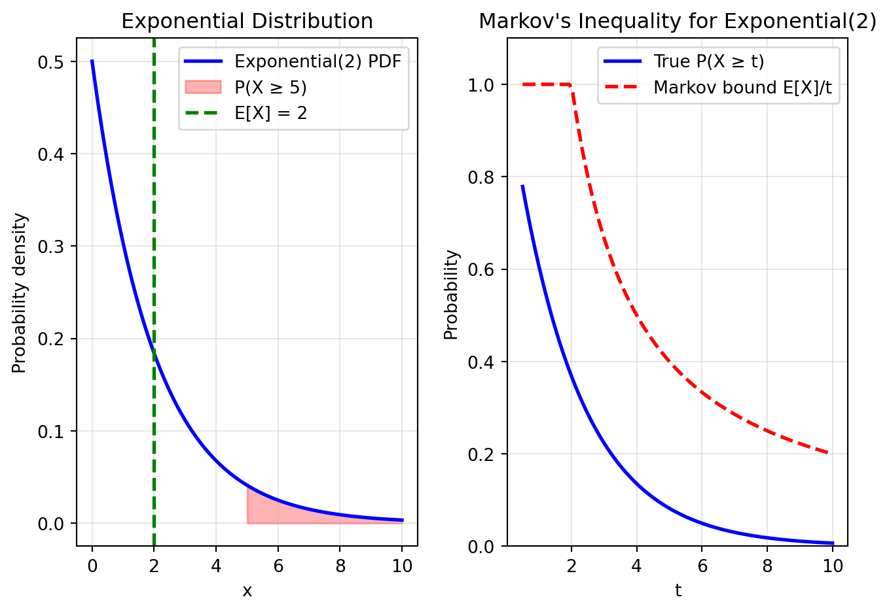
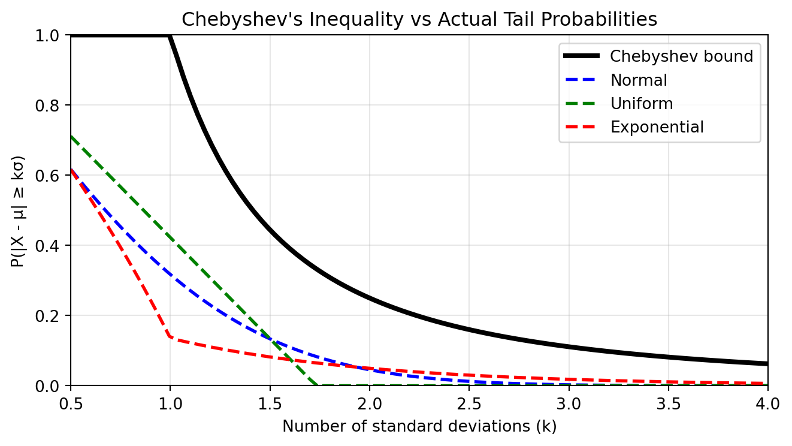
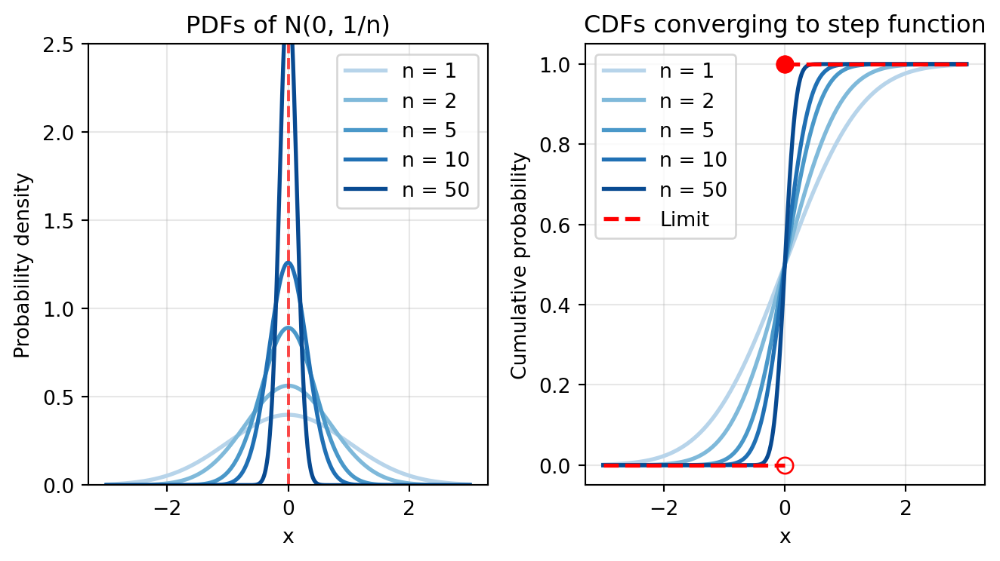
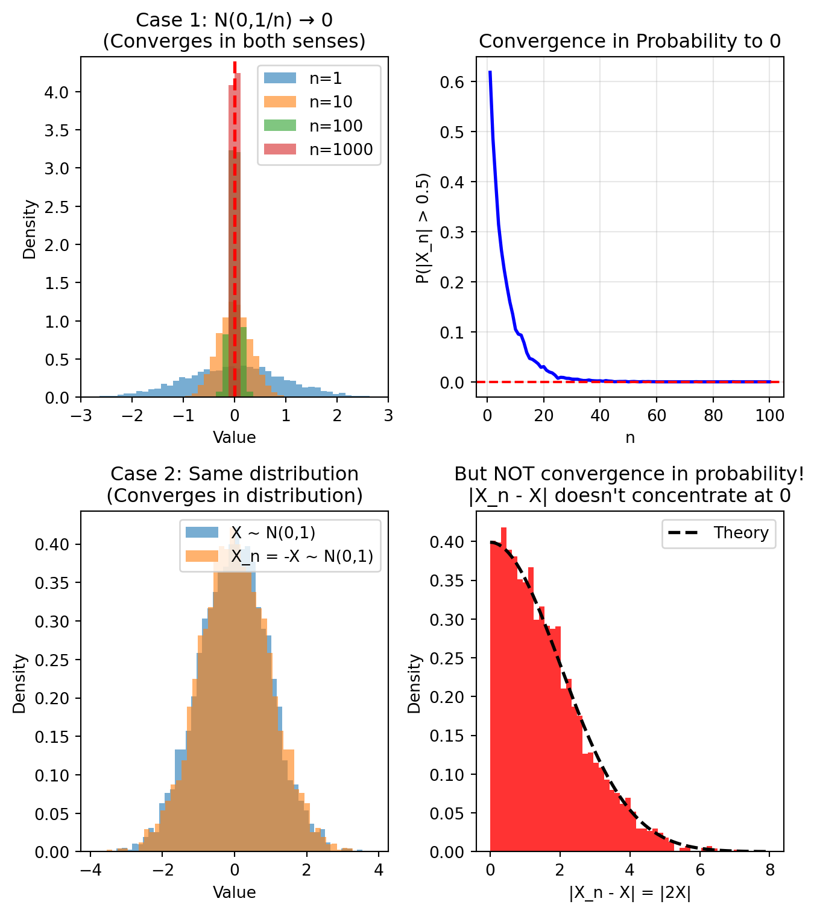
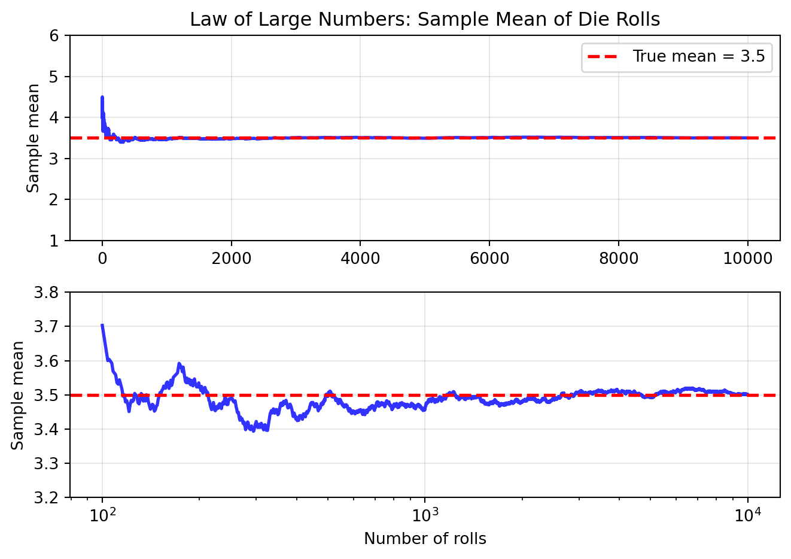

After completing this chapter, you will be able to:
Explain how probability inequalities provide bounds on uncertainty.
Define concepts of probabilistic convergence and apply the Law of Large Numbers and Central Limit Theorem.
Define the core vocabulary of statistical inference (models, parameters, estimators).
Evaluate an estimator’s quality using its standard error, bias, and variance.
Explain the bias-variance tradeoff in the context of Mean Squared Error (MSE).
Note
This chapter covers probability inequalities, convergence concepts, and the foundations of statistical inference. The material is adapted from Chapters 4, 5, and 6 of Wasserman (2013), supplemented with additional examples and perspectives relevant to data science applications.
3.2 Introduction and Motivation
3.2.1 Convergence Matters to Understand Machine Learning Algorithms
Deep learning models are trained with stochastic optimization algorithms. These algorithms produce a sequence of parameter estimates \theta_1, \theta_2, \theta_3, \ldots
as they iterate through the data. But here’s the fundamental question: do these estimates eventually converge to a good solution, and how do we establish that?
The challenge is that these parameter estimates are random variables – they depend on random initialization, random mini-batch selection, and random data shuffling. We can’t use the simple definition of convergence where |x_n - x| < \epsilon for all large n, which you may remember from calculus. We need new mathematical tools.
This chapter develops the language of probabilistic convergence to understand and analyze such algorithms. We’ll then use these tools to build the foundation of statistical inference – the science of drawing conclusions about populations from samples.
Consider a concrete example: training a neural network for image classification. At each iteration t:
Pick a random subset S of training images
Compute the gradient g = \sum_{x_i \in S} \nabla_\theta L(\theta_t; x_i) of the loss1
Compute next estimate of the model parameters, \theta_{t+1}, using g and the current parameters2
The randomness in batch selection makes each \theta_t a random variable. As mentioned before, ideally we would want \theta_1, \theta_2, \ldots to converge to a good solution. But what does it even mean to say the algorithm “converges”? This chapter provides the answer.
Convergence isn’t just about optimization algorithms. It’s central to all of statistics:
When we compute a sample mean with increasing amount of data, does it converge to the population mean?
More generally, when we estimate a model parameter, does our estimate improve with more data?
When we approximate a distribution, does the approximation get better?
The remarkable answers to these questions – provided by the Law of Large Numbers and Central Limit Theorem – form the theoretical backbone of statistical inference and machine learning.
Finnish Terminology Reference
For Finnish-speaking students, here’s a reference table of key terms in this chapter:
English
Finnish
Context
Markov’s inequality
Markovin epäyhtälö
Bounds probability of large values
Chebyshev’s inequality
Tšebyšovin epäyhtälö
Uses variance to bound deviations
Convergence in probability
Stokastinen suppeneminen
Random variable settling to a value
Convergence in distribution
Jakaumasuppeneminen
Distribution shape converging
Law of Large Numbers
Suurten lukujen laki
Sample mean → population mean
Central Limit Theorem
Keskeinen raja-arvolause
Sums become normally distributed
Statistical model
Tilastollinen malli
Set of possible distributions
Parametric model
Parametrinen malli
Finite-dimensional parameter space
Nonparametric model
Epäparametrinen malli
Infinite-dimensional space
Nuisance parameter
Kiusaparametri
Parameter not of primary interest
Point estimation
Piste-estimointi
Single best guess of parameter
Estimator
Estimaattori
Function of data estimating parameter
Bias
Harha
Expected error of estimator
Unbiased
Harhaton
Zero expected error
Consistent
Tarkentuva
Converges to true value
Standard error
Keskivirhe
Standard deviation of estimator
Mean Squared Error (MSE)
Keskimääräinen neliövirhe
Average squared error
Sampling distribution
Otantajakauma
Distribution of the estimator
3.3 Inequalities: Bounding the Unknown
3.3.1 Why We Need Inequalities
In probability and statistics, we often encounter quantities that are difficult or impossible to compute exactly. Inequalities provide bounds – upper or lower limits – that give us useful information even when exact calculations are intractable. They serve three critical purposes:
Bounding quantities: When we can’t compute a probability exactly, an upper bound tells us it’s “at most this large”
Proving theorems: The Law of Large Numbers and Central Limit Theorem rely on inequalities in their proofs
Practical guarantees: In machine learning, we use inequalities to create bounds on critical quantities such as generalization error3
Think of inequalities as providing universal statistical guarantees. They tell us that no matter how complicated the underlying distribution, certain bounds will always hold.
3.3.2 Markov’s Inequality
Markov’s Inequality: For a non-negative random variable X with finite expectation: \mathbb{P}(X \geq t) \leq \frac{\mathbb{E}(X)}{t} \quad \text{for all } t > 0
This remarkably simple inequality says that – no matter what – the probability of a non-negative random variable exceeding a threshold t is bounded by its mean divided by t.
Proof
Since X \geq 0: \begin{align}
\mathbb{E}(X) &= \int_0^{\infty} x f(x) \, dx \\
&= \int_0^t x f(x) \, dx + \int_t^{\infty} x f(x) \, dx \\
&\geq \int_t^{\infty} x f(x) \, dx \\
&\geq t \int_t^{\infty} f(x) \, dx \\
&= t \mathbb{P}(X \geq t)
\end{align}
Rearranging gives the result.
Example: Exceeding a Multiple of the Mean
Let X be a non-negative random variable with mean \mathbb{E}(X) = \mu. What can we say about the probability that X exceeds k times its mean, for some k > 1?
Solution
Using Markov’s inequality by setting t = k\mu: \mathbb{P}(X \geq k\mu) \leq \frac{\mathbb{E}(X)}{k\mu} = \frac{\mu}{k\mu} = \frac{1}{k}
For example, the probability of a non-negative random variable exceeding twice its mean is at most 1/2. The probability of it exceeding 10 times its mean is at most 1/10. This universal bound is surprisingly useful.
Example: Exam Scores
If the average exam score is 50 points, what’s the maximum probability that a randomly selected student scored 90 or more?
Markov’s inequality captures a fundamental truth: averages
constrain extremes.
Imagine a village where the average wealth is €50,000. What fraction
of villagers could be millionaires? If everyone were a millionaire, the
average would be at least €1,000,000. Since the average is only €50,000,
at most 5% can be millionaires:
\[\text{Fraction of millionaires} \leq \frac{€50,000}{€1,000,000} = 0.05\]
This reasoning works for any non-negative quantity: test scores,
waiting times, file sizes, or loss values in machine learning. The
average puts a hard limit on how often extreme values can occur.
Markov’s inequality is the foundation for many other inequalities.
Its power lies in its generality—it applies to any non-negative random
variable with finite expectation.
The inequality is tight (best possible) for certain distributions.
Consider: \[X = \begin{cases}
0 & \text{with probability } 1 - \frac{\mu}{t} \\
t & \text{with probability } \frac{\mu}{t}
\end{cases}\]
Then \(\mathbb{E}(X) = \mu\) and
\(\mathbb{P}(X \geq t) = \frac{\mu}{t}\),
achieving equality in Markov’s inequality.
Let’s visualize Markov’s inequality by comparing the true tail
probability with the bound for an exponential distribution.
import numpy as npimport matplotlib.pyplot as pltfrom scipy import stats# Set up the exponential distributionbeta =2# mean = 2x = np.linspace(0, 10, 1000)pdf = stats.expon.pdf(x, scale=beta)# Compute true probabilities and Markov boundst_values = np.linspace(0.5, 10, 100)true_probs =1- stats.expon.cdf(t_values, scale=beta)markov_bounds = np.minimum(beta / t_values, 1) # E[X]/t, capped at 1# Create the plotfig, (ax1, ax2) = plt.subplots(1, 2, figsize=(7, 5))# Left plot: PDF with shaded tailt_example =5ax1.plot(x, pdf, 'b-', linewidth=2, label='Exponential(2) PDF')ax1.fill_between(x[x >= t_example], pdf[x >= t_example], alpha=0.3, color='red', label=f'P(X ≥ {t_example})')ax1.axvline(beta, color='green', linestyle='--', linewidth=2, label=f'E[X] = {beta}')ax1.set_xlabel('x')ax1.set_ylabel('Probability density')ax1.set_title('Exponential Distribution')ax1.legend()ax1.grid(True, alpha=0.3)# Right plot: True probability vs Markov boundax2.plot(t_values, true_probs, 'b-', linewidth=2, label='True P(X ≥ t)')ax2.plot(t_values, markov_bounds, 'r--', linewidth=2, label='Markov bound E[X]/t')ax2.set_xlabel('t')ax2.set_ylabel('Probability')ax2.set_title('Markov\'s Inequality for Exponential(2)')ax2.legend()ax2.grid(True, alpha=0.3)ax2.set_ylim(0, 1.1)plt.tight_layout()plt.show()# Numerical comparison at specific pointsprint("Comparison of true probability vs Markov bound:")for t in [1, 2, 4, 8]: true_p =1- stats.expon.cdf(t, scale=beta) markov_p = beta / tprint(f"t = {t}: True P(X ≥ {t}) = {true_p:.4f}, Markov bound = {markov_p:.4f}")

Comparison of true probability vs Markov bound:
t = 1: True P(X ≥ 1) = 0.6065, Markov bound = 2.0000
t = 2: True P(X ≥ 2) = 0.3679, Markov bound = 1.0000
t = 4: True P(X ≥ 4) = 0.1353, Markov bound = 0.5000
t = 8: True P(X ≥ 8) = 0.0183, Markov bound = 0.2500
Notice that the Markov bound is always valid but often loose. It
becomes tighter as \(t\) increases
relative to the mean.
3.3.3 Chebyshev’s Inequality
While Markov’s inequality uses only the mean, Chebyshev’s inequality leverages the variance to provide a tighter bound on deviations from the mean.
Chebyshev’s Inequality: Let X have mean \mu and variance \sigma^2. Then: \mathbb{P}(|X - \mu| \geq t) \leq \frac{\sigma^2}{t^2} \quad \text{for all } t > 0
Proof
Apply Markov’s inequality to the non-negative random variable (X - \mu)^2: \mathbb{P}(|X - \mu| \geq t) = \mathbb{P}((X - \mu)^2 \geq t^2) \leq \frac{\mathbb{E}[(X - \mu)^2]}{t^2} = \frac{\sigma^2}{t^2}
Equivalently, in terms of standard deviations: \mathbb{P}(|X - \mu| \geq k\sigma) \leq \frac{\sigma^2}{k^2 \sigma^2 } = \frac{1}{k^2} \quad \text{for all } k > 0
Example: Universal Two-Sigma Rule
For any distribution (not just normal!), Chebyshev’s inequality tells us:
\mathbb{P}(|X - \mu| < k \sigma) \ge 1 - \frac{1}{k^2}.
Thus, for k=2 and k=3 we find:
At least 75% of the data lies within 2 standard deviations of the mean: \mathbb{P}(|X - \mu| < 2\sigma) \geq 1 - \frac{1}{4} = 0.75
At least 89% lies within 3 standard deviations: \mathbb{P}(|X - \mu| < 3\sigma) \geq 1 - \frac{1}{9} \approx 0.889
Compare this to the normal distribution where about 95% lies within 2\sigma and 99.7% within 3\sigma. Chebyshev’s bounds are weaker but universal.
We show below the Chebyshev’s bound compared to the actual tail probabilities of a few famous distributions (normal, uniform and exponential).
Show code
# Visualizing Chebyshev's inequalityimport numpy as npimport matplotlib.pyplot as pltfrom scipy import stats# Set up comparison for different distributionsk_values = np.linspace(0.5, 4, 100)chebyshev_bound = np.minimum(1/ k_values**2, 1)# Compute actual probabilities for different distributionsnormal_probs =2* (1- stats.norm.cdf(k_values))uniform_probs = np.maximum(0, 1- k_values / np.sqrt(3)) # Uniform on [-sqrt(3), sqrt(3)]exp_probs = []for k in k_values:# For exponential with mean 1, mu=1, sigma=1 exp_probs.append(stats.expon.cdf(1- k, scale=1) + (1- stats.expon.cdf(1+ k, scale=1)))plt.figure(figsize=(7, 4))plt.plot(k_values, chebyshev_bound, 'k-', linewidth=3, label='Chebyshev bound')plt.plot(k_values, normal_probs, 'b--', linewidth=2, label='Normal')plt.plot(k_values, uniform_probs, 'g--', linewidth=2, label='Uniform')plt.plot(k_values, exp_probs, 'r--', linewidth=2, label='Exponential')plt.xlabel('Number of standard deviations (k)')plt.ylabel('P(|X - μ| ≥ kσ)')plt.title('Chebyshev\'s Inequality vs Actual Tail Probabilities')plt.legend()plt.grid(True, alpha=0.3)plt.xlim(0.5, 4)plt.ylim(0, 1)plt.tight_layout()plt.show()# Print specific valuesprint("Probability of being more than k standard deviations from the mean:")print("k\tChebyshev\tNormal\t\tUniform\t\tExponential")for k in [1, 2, 3]: cheby =1/k**2 normal =2* (1- stats.norm.cdf(k)) uniform =max(0, 1- k/np.sqrt(3)) exp_val = stats.expon.cdf(1- k, scale=1) + (1- stats.expon.cdf(1+ k, scale=1))print(f"{k}\t{cheby:.4f}\t\t{normal:.4f}\t\t{uniform:.4f}\t\t{exp_val:.4f}")

Probability of being more than k standard deviations from the mean:
k Chebyshev Normal Uniform Exponential
1 1.0000 0.3173 0.4226 0.1353
2 0.2500 0.0455 0.0000 0.0498
3 0.1111 0.0027 0.0000 0.0183
Advanced: Hoeffding’s Inequality
While Chebyshev’s inequality is universal, it can be quite loose. For bounded random variables, Hoeffding’s inequality provides an exponentially decaying bound that’s much sharper.
Let X_1, \ldots, X_n be independent random variables with X_i \in [a_i, b_i]. Let S_n = \sum_{i=1}^n X_i. Then for any t > 0: \mathbb{P}(S_n - \mathbb{E}[S_n] \geq t) \leq \exp\left(-\frac{2t^2}{\sum_{i=1}^n (b_i - a_i)^2}\right)
For the special case of n independent Bernoulli(p) random variables: \mathbb{P}\left(|\bar{X}_n - p| > \epsilon\right) \leq 2e^{-2n\epsilon^2} where \bar{X}_n = \frac{1}{n}\sum_{i=1}^n X_i.
The key insight is the exponential decay in n. This makes Hoeffding’s inequality the foundation for many machine learning generalization bounds.
Example: Comparing Bounds
Consider estimating a probability p from n = 100 Bernoulli trials. How likely is our estimate to be off by more than \epsilon = 0.2?
Hoeffding’s bound is nearly 100 times tighter! This exponential improvement is crucial for machine learning theory.
The proof of Hoeffding’s inequality uses moment generating functions and is beyond the scope of this course, but the intuition is that bounded random variables have light tails, allowing for much stronger concentration.
3.4 Convergence of Random Variables
3.4.1 The Need for Probabilistic Convergence
In calculus, we say a sequence x_n converges to x if for every \epsilon > 0, we have |x_n - x| < \epsilon for all sufficiently large n. But what about sequences of random variables?
There are multiple scenarios:
Concentrating distribution: Let X_n \sim \mathcal{N}(0, 1/n). As n increases, the distribution concentrates more tightly around 0. Intuitively, X_n is “converging” to 0.
Tracking outcomes: The case above can be generalized where X_n does not converge to a constant (such as 0), but converges to the values taken by another random variableX.
The problem is that for any specific x, \mathbb{P}(X_n = x) = 0 for all n: continuous random variables never exactly equal any specific value.
There is then a completely different kind of convergence.
Stable distribution: Let X_n \sim \mathcal{N}(0, 1) for all n. Each X_n has the same distribution, but they’re different random variables. Is there a broader sense in which this sequence “converges”?
In sum, we need new definitions that capture different notions of what it means for random variables to converge.
3.4.2 Convergence in Probability
We consider the first two cases mentioned earlier: convergence of outcomes of a sequence of random variables to a constant or to the outcomes of another random variable, known as convergence in probability.
A sequence of random variables X_nconverges in probability to a random variable X, written X_n \xrightarrow{P} X, if for every \epsilon > 0: \mathbb{P}(|X_n - X| > \epsilon) \to 0 \text{ as } n \to \infty
When X = c (a constant), we write X_n \xrightarrow{P} c.
This definition captures the idea that X_n becomes increasingly likely to be close to X as n grows. The probability of X_n being “far” from X (more than \epsilon away) vanishes. In other words, the sequence of outcomes of the random variable X_n “track” the outcomes of X with ever-increasing accuracy as n increases.
Example: Convergence to Zero
Let X_n \sim \mathcal{N}(0, 1/n). We’ll show that X_n \xrightarrow{P} 0.
For any \epsilon > 0, using Chebyshev’s inequality: \mathbb{P}(|X_n - 0| > \epsilon) = \mathbb{P}(|X_n| > \epsilon) \leq \frac{\mathbb{V}(X_n)}{\epsilon^2} = \frac{1/n}{\epsilon^2} = \frac{1}{n\epsilon^2}
Since \frac{1}{n\epsilon^2} \to 0 as n \to \infty, we have X_n \xrightarrow{P} 0.
3.4.3 Convergence in Distribution
We now consider the other case, where it’s not the random variables to converge but their distribution.
A sequence of random variables X_nconverges in distribution to a random variable X, written X_n \rightsquigarrow X, if: \lim_{n \to \infty} F_n(t) = F(t) at all points t where F is continuous. Here F_n is the CDF of X_n and F is the CDF of X.
This captures the idea that the distribution (or “shape”) of X_n becomes increasingly similar to that of X. We’re not saying the random variables themselves are close – just their overall probability distributions.
If X is a point mass at c, we denote X_n \rightsquigarrow c.
Warning
Key Distinction:
Convergence in probability: The random variables themselves get close
Convergence in distribution: Only the distributions get close
Let’s visualize this with the X_n \sim \mathcal{N}(0, 1/n) example:
Show code
import numpy as npimport matplotlib.pyplot as pltfrom scipy import stats# Set up the figurefig, (ax1, ax2) = plt.subplots(1, 2, figsize=(7, 4))# Left plot: PDFs converging to a spike at 0x = np.linspace(-3, 3, 1000)n_values = [1, 2, 5, 10, 50]colors = plt.cm.Blues(np.linspace(0.3, 0.9, len(n_values)))for n, color inzip(n_values, colors): pdf = stats.norm.pdf(x, loc=0, scale=1/np.sqrt(n)) ax1.plot(x, pdf, linewidth=2, color=color, label=f'n = {n}')ax1.axvline(0, color='red', linestyle='--', alpha=0.7)ax1.set_xlabel('x')ax1.set_ylabel('Probability density')ax1.set_title('PDFs of N(0, 1/n)')ax1.legend()ax1.grid(True, alpha=0.3)ax1.set_ylim(0, 2.5)# Right plot: CDFs converging to step functionfor n, color inzip(n_values, colors): cdf = stats.norm.cdf(x, loc=0, scale=1/np.sqrt(n)) ax2.plot(x, cdf, linewidth=2, color=color, label=f'n = {n}')# Plot limiting step functionax2.plot(x[x <0], np.zeros(sum(x <0)), 'r--', linewidth=2, label='Limit')ax2.plot(x[x >=0], np.ones(sum(x >=0)), 'r--', linewidth=2)ax2.plot([0, 0], [0, 1], 'ro', markersize=8, fillstyle='none')ax2.plot([0], [1], 'ro', markersize=8)ax2.set_xlabel('x')ax2.set_ylabel('Cumulative probability')ax2.set_title('CDFs converging to step function')ax2.legend()ax2.grid(True, alpha=0.3)plt.tight_layout()plt.show()

As n increases:
The PDF becomes more concentrated at 0 (spike)
The CDF approaches a step function jumping from 0 to 1 at x=0
This is convergence in distribution to a point mass at 0
3.4.4 Comparing Modes of Convergence
Relationships Between Convergence Types
If X_n \xrightarrow{P} X then X_n \rightsquigarrow X (always)
If X is a point mass at c and X_n \rightsquigarrow X, then X_n \xrightarrow{P} c
Convergence in probability implies convergence in distribution, but the converse holds only for constants.
Convergence in Probability: The Perfect Weather
Forecast
Let \(X\) be the actual temperature
tomorrow and \(X_n\) be its forecast
from an ever-improving machine learning model where
\(n\) is the model version, as we make
it bigger and feed it more data.
Convergence in probability
(\(X_n \xrightarrow{P} X\))
means the forecast becomes more and more accurate as the model gets
better and better. Eventually, the temperature prediction
\(X_n\) gets so close to the actual
temperature \(X\) that the forecast
error, \(|X_n - X|\), becomes
negligible. The individual outcomes match.
Convergence in Distribution: The Perfect Climate
Model
A climate model doesn’t predict a specific day’s temperature; it
captures the statistical “character” of a season. Let
\(X\) be the random variable for daily
temperature, and \(X_n\) be a model’s
simulation of a typical day.
Convergence in distribution
(\(X_n \rightsquigarrow X\))
means the model’s simulated statistics (e.g., its histogram of
temperatures) become identical to the real climate’s statistics. The
patterns match, but the individual outcomes
don’t.
The Takeaway:
Probability implies Distribution: A perfect daily
forecast naturally captures the climate’s long-term statistics.
Distribution does NOT imply Probability: A perfect
climate model can’t predict the actual temperature on next Friday.
We can construct a counterexample showing that convergence in
distribution does NOT imply convergence in probability.
Counterexample: Let
\(X \sim \mathcal{N}(0,1)\) and define
\(X_n = -X\) for all
\(n\). Then:
Each \(X_n \sim \mathcal{N}(0,1)\),
so trivially
\(X_n \rightsquigarrow X\)
But \(|X_n - X| = |2X|\), so
\(\mathbb{P}(|X_n - X| > \epsilon) = \mathbb{P}(|X| > \epsilon/2) \not\to 0\)
Therefore \(X_n\) does NOT converge
to \(X\) in probability!
The random variables have the same distribution but are perfectly
anti-correlated.
Let’s demonstrate both types of convergence and the counterexample
computationally.
import numpy as npimport matplotlib.pyplot as pltnp.random.seed(42)fig, axes = plt.subplots(2, 2, figsize=(7, 8))# Case 1: X_n ~ N(0, 1/n) → 0 (both types of convergence)ax = axes[0, 0]n_values = [1, 10, 100, 1000]n_samples =5000for i, n inenumerate(n_values): samples = np.random.normal(0, 1/np.sqrt(n), n_samples) ax.hist(samples, bins=50, alpha=0.6, density=True, label=f'n={n}', range=(-3, 3))ax.axvline(0, color='red', linestyle='--', linewidth=2)ax.set_xlabel('Value')ax.set_ylabel('Density')ax.set_title('Case 1: N(0,1/n) → 0\n(Converges in both senses)')ax.legend()ax.set_xlim(-3, 3)# Case 1 continued: Show |X_n - 0| for different epsilonax = axes[0, 1]epsilon =0.5prob_far = []for n inrange(1, 101): samples = np.random.normal(0, 1/np.sqrt(n), n_samples) prob_far.append(np.mean(np.abs(samples) > epsilon))ax.plot(range(1, 101), prob_far, 'b-', linewidth=2)ax.axhline(0, color='red', linestyle='--')ax.set_xlabel('n')ax.set_ylabel(f'P(|X_n| > {epsilon})')ax.set_title('Convergence in Probability to 0')ax.grid(True, alpha=0.3)# Case 2: X_n = -X counterexampleax = axes[1, 0]X = np.random.normal(0, 1, n_samples)X_n =-X # X_n for all n# Plot distributions (they're identical!)ax.hist(X, bins=50, alpha=0.6, density=True, label='X ~ N(0,1)')ax.hist(X_n, bins=50, alpha=0.6, density=True, label='X_n = -X ~ N(0,1)')ax.set_xlabel('Value')ax.set_ylabel('Density')ax.set_title('Case 2: Same distribution\n(Converges in distribution)')ax.legend()# But |X_n - X| = |2X| doesn't converge to 0ax = axes[1, 1]diff = np.abs(X_n - X)ax.hist(diff, bins=50, alpha=0.8, density=True, color='red')ax.set_xlabel('|X_n - X| = |2X|')ax.set_ylabel('Density')ax.set_title('But NOT convergence in probability!\n|X_n - X| doesn\'t concentrate at 0')# Add theoretical chi distribution (|2X| where X~N(0,1))x_theory = np.linspace(0, 8, 1000)y_theory = stats.chi.pdf(x_theory *0.5, df=1) *0.5# Scale for |2X|ax.plot(x_theory, y_theory, 'k--', linewidth=2, label='Theory')ax.legend()plt.tight_layout()plt.show()

Summary:
Case 1:
\(X_n ~ \mathcal{N}\left(0, 1/n\right)\)
converges to 0 in BOTH senses
Case 2: \(X_n = -X\) has same
distribution as X but does NOT converge in probability
Convergence in distribution is weaker than convergence in
probability
3.4.5 Properties and Transformations
Understanding how convergence behaves under various operations is crucial for statistical theory. Here are the key properties:
Operations Under Convergence in Probability
If X_n \xrightarrow{P} X and Y_n \xrightarrow{P} Y, then:
This shows that convergence in probability is well-beheaved under standard operations of sum, product, and division not-by-zero.
Slutsky’s Theorem
If X_n \rightsquigarrow X and Y_n \xrightarrow{P} c (constant), then:
X_n + Y_n \rightsquigarrow X + c
X_n Y_n \rightsquigarrow cX
X_n / Y_n \rightsquigarrow X/c (if c \neq 0)
Slutsky’s theorem tells us that convergence in distribution behaves nicely when paired with random variables that converge to a constant (this is not true in general!).
Continuous Mapping Theorem
If g is a continuous function:
X_n \xrightarrow{P} X \implies g(X_n) \xrightarrow{P} g(X)
X_n \rightsquigarrow X \implies g(X_n) \rightsquigarrow g(X)
Finally, we see that continuous mappings behave nicely for both types of convergence.
Warning
Important limitation: In general, if X_n \rightsquigarrow X and Y_n \rightsquigarrow Y, we cannot conclude that X_n + Y_n \rightsquigarrow X + Y. Convergence in distribution does not preserve sums unless one component converges to a constant!
Counterexample: Let X \sim \mathcal{N}(0,1) and define Y_n = -X for all n. Then Y_n \sim \mathcal{N}(0,1), so Y_n \rightsquigarrow Y \sim \mathcal{N}(0,1). But X + Y_n = X - X = 0, which does not converge in distribution to X + Y \sim \mathcal{N}(0,2).
Key takeaway
The rules for convergence are subtle. Generally speaking, convergence in probability behaves nicely under algebraic operations, but convergence in distribution requires more care. Always verify which type of convergence you have before applying these properties!
3.5 The Two Fundamental Theorems of Statistics
3.5.1 The Law of Large Numbers (LLN)
The Law of Large Numbers formalizes one of our most basic intuitions about probability: averages stabilize as we collect more data. When we flip a fair coin many times, the proportion of heads approaches 1/2. When we measure heights of many people, the sample mean approaches the population mean. This isn’t just intuition – it’s a mathematical theorem.
Let X_1, X_2, \ldots, X_n be independent and identically distributed (IID) random variables with \mathbb{E}(X_i) = \mu and \mathbb{V}(X_i) = \sigma^2 < \infty. Define the sample mean: \bar{X}_n = \frac{1}{n} \sum_{i=1}^n X_i
Then \bar{X}_n \xrightarrow{P} \mu.
Interpretation: The sample mean converges in probability to the population mean. As we collect more data, our estimate gets arbitrarily close to the true value with high probability.
Proof
We’ll use Chebyshev’s inequality. First, compute the mean and variance of \bar{X}_n:
(We used independence for the variance calculation.)
Now apply Chebyshev’s inequality: for any \epsilon > 0, \mathbb{P}(|\bar{X}_n - \mu| > \epsilon) \leq \frac{\mathbb{V}(\bar{X}_n)}{\epsilon^2} = \frac{\sigma^2}{n\epsilon^2} \to 0 \text{ as } n \to \infty
Therefore \bar{X}_n \xrightarrow{P} \mu.
Let’s visualize the Law of Large Numbers in action by simulating repeated rolls of a standard six-sided die and computing the mean of all rolls until that point.
We show this in two plots: on a normal scale (top) and on a log-scale (bottom) for the number of rolls on the x axis. The bottom plot also zooms in on the y-axis around 3.5.
Note how the sample mean starts with high variability but converges to the true mean (3.5) as the number of rolls increases.
Show code
import numpy as npimport matplotlib.pyplot as pltnp.random.seed(42)# Simulate die rollsn_max =10000die_rolls = np.random.randint(1, 7, n_max)cumulative_mean = np.cumsum(die_rolls) / np.arange(1, n_max +1)true_mean =3.5# Create the plot without shared x-axisfig, (ax1, ax2) = plt.subplots(2, 1, figsize=(7, 5))# Top plot: Full scale with linear x-axisax1.plot(cumulative_mean, linewidth=2, color='blue', alpha=0.8)ax1.axhline(y=true_mean, color='red', linestyle='--', linewidth=2, label=f'True mean = {true_mean}')ax1.set_ylabel('Sample mean')ax1.set_title('Law of Large Numbers: Sample Mean of Die Rolls')ax1.legend()ax1.grid(True, alpha=0.3)ax1.set_ylim(1, 6)# Bottom plot: Zoomed in to show convergence with log scalex_values = np.arange(100, n_max)ax2.plot(x_values, cumulative_mean[100:], linewidth=2, color='blue', alpha=0.8)ax2.axhline(y=true_mean, color='red', linestyle='--', linewidth=2)ax2.set_xlabel('Number of rolls')ax2.set_ylabel('Sample mean')ax2.set_xscale('log')ax2.grid(True, alpha=0.3)ax2.set_ylim(3.2, 3.8)plt.tight_layout()plt.show()# Show convergence at specific sample sizesfor n in [10, 100, 1000, 10000]:print(f"After {n:5d} rolls: sample mean = {cumulative_mean[n-1]:.4f}, "f"error = {abs(cumulative_mean[n-1] - true_mean):.4f}")

After 10 rolls: sample mean = 3.8000, error = 0.3000
After 100 rolls: sample mean = 3.6900, error = 0.1900
After 1000 rolls: sample mean = 3.4570, error = 0.0430
After 10000 rolls: sample mean = 3.4999, error = 0.0001
Weak vs Strong Laws of Large Numbers
The theorem above is known as the “Weak” Law of Large Numbers because it guarantees convergence in probability. There exists a stronger version that guarantees almost sure convergence: \mathbb{P}(\bar{X}_n \to \mu) = 1. The “Strong” LLN says that with probability 1, the sample mean will eventually get arbitrarily close to \mu and stay close, while the Weak LLN only guarantees that the probability of being far from \mu goes to zero. The Weak LLN requires only finite variance, while the Strong LLN typically needs additional assumptions (like finite fourth moments) but delivers a more powerful conclusion. We present the Weak version as it has minimal assumptions and suffices for most statistical applications.
3.5.2 The Central Limit Theorem (CLT)
While the Law of Large Numbers tells us that sample means converge to the population mean, it doesn’t tell us about the distribution of the sample mean. The Central Limit Theorem fills this gap with a remarkable result: properly scaled sample means are approximately normal, regardless of the underlying distribution!
Let X_1, X_2, \ldots, X_n be IID random variables with \mathbb{E}(X_i) = \mu and \mathbb{V}(X_i) = \sigma^2 < \infty. Define: Z_n = \frac{\bar{X}_n - \mu}{\sigma/\sqrt{n}} = \frac{\sqrt{n}(\bar{X}_n - \mu)}{\sigma}
Then Z_n \rightsquigarrow Z where Z \sim \mathcal{N}(0, 1).
Alternative notations (all mean the same thing):
\bar{X}_n \approx \mathcal{N}(\mu, \sigma^2/n) for large n
Critical Point: The CLT is about the distribution of the sample mean, not the data itself! The original data doesn’t become normal—only the sampling distribution of \bar{X}_n does.
Interactive Demonstration of the CLT
Let’s visualize how the CLT works for different distributions from continuous to discrete and skewed (asymmetrical).
The interactive visualization below allows you to see this convergence in action. You can change the underlying distribution and adjust the sample size n to see how the distribution of the standardized sample mean approaches a standard normal distribution (red curves).
A factory produces bolts with mean length \mu = 5 cm and standard deviation \sigma = 0.1 cm. If we randomly sample 100 bolts, what’s the probability their average length exceeds 5.02 cm?
Solution
By the CLT, \bar{X}_{100} \approx \mathcal{N}(5, 0.1^2/100) = \mathcal{N}(5, 0.0001).
where Z \sim \mathcal{N}(0,1). From standard normal tables: \mathbb{P}(Z > 2) \approx 0.0228.
So there’s about a 2.3% chance the sample mean exceeds 5.02 cm.
CLT with Unknown Variance: If we replace \sigma with the sample standard deviation S_n = \sqrt{\frac{1}{n-1} \sum_{i=1}^n (X_i - \bar{X}_n)^2}
then we still have: \frac{\sqrt{n}(\bar{X}_n - \mu)}{S_n} \rightsquigarrow \mathcal{N}(0, 1)
This version is crucial for practice since we rarely know the true variance!
Rejoinder: Understanding Algorithms
Remember the sequence of random variables \theta_1, \theta_2, \ldots from our stochastic optimization algorithm at the beginning of this chapter? We can now answer what kind of convergence we should expect:
Convergence in probability: We want \theta_n \xrightarrow{P} \theta^* where \theta^* is the true optimal solution. This means the probability of \theta_n being far from the optimum vanishes as iterations increase.
The tools we’ve covered – probability inequalities (to bound deviations), convergence concepts (to formalize what “converges” means), and limit theorems (to understand averaging behavior) – are the foundation for analyzing when and why algorithms like stochastic gradient descent converge to good solutions. Modern machine learning theory relies heavily on these concepts to provide theoretical guarantees about algorithm performance!
3.6 The Language of Statistical Inference
3.6.1 From Probability to Inference
We’ve developed powerful tools: inequalities that bound uncertainty, convergence concepts that describe limiting behavior, and fundamental theorems that guarantee nice properties of averages. Now we flip the perspective.
Probability: Given a known distribution, what can we say about the data we’ll observe?
Statistical Inference: Given observed data, what can we infer about the unknown distribution that generated it? More formally: given a sample X_1, \ldots, X_n \sim F, how do we infer F?
This process – often called “learning” in computer science – is at the core of both classical statistics and modern machine learning. Sometimes we want to infer the entire distribution F, but often we focus on specific features like its mean, variance, or other parameters.
Example: Modeling Uncertainty in Real Decisions
An online retailer tests a new ad campaign. Out of 1000 users who see the ad, 30 make a purchase (3% conversion rate). But this raises critical questions:
Immediate questions:
What can we say about the true conversion rate? Is it exactly 3%?
How likely is it that at least 25 out of the next 1000 users will convert?
Comparative questions:
A competing ad had 290 conversions out of 10,000 users (2.9% rate). Which is better?
How confident can we be that the 3% ad truly outperforms the 2.9% ad – could the difference just be due to random chance?
Long-term questions:
What’s the probability that the long-run conversion rate exceeds 2.5%?
How many more users do we need to test to be 95% confident about the true rate?
These questions – about uncertainty, confidence, and decision-making with limited data – are at the heart of statistical inference.
3.6.2 Statistical Models
A statistical model\mathfrak{F} is a set of probability distributions (or densities or regression functions).
In the context of inference, we use models to represent our assumptions about which distributions could have generated our observed data. The model defines the “universe of possibilities” we’re considering – we then use data to identify which specific distribution within \mathfrak{F} is most plausible.
Models come in two main flavors, parametric and nonparametric.
Parametric Models
A parametric model is indexed by a finite number of parameters. We write it as: \mathfrak{F} = \{f(x; \theta) : \theta \in \Theta\}
where:
\theta (theta) is the parameter (possibly vector-valued)4
\Theta (capital theta) is the parameter space (the set of all possible parameter values)
f(x; \theta) is the density or distribution function indexed by \theta
Typically, the parameters \theta are unknown quantities we want to estimate. If there are elements of the vector \theta that we are not interested in, those are called nuisance parameters.
Example: Feature Performance as a Parametric Model
A product manager at a tech company launches a new “AI Recap” feature in their app. To determine if the feature is a success, they track the number of daily views over the first month. They hypothesize that the daily view count approximately follows a normal distribution.
The model for daily views is a parametric family \mathfrak{F}: \mathfrak{F} = \{f(x; \theta) : \theta = (\mu, \sigma^2), \mu \in \mathbb{R}, \sigma^2 > 0\}
where the density function is:f(x; \theta) = \frac{1}{\sqrt{2\pi\sigma^2}} \exp\left(-\frac{(x-\mu)^2}{2\sigma^2}\right)
Nuisance parameters in action: The company has set a target: the feature will be considered successful and receive further development only if it can reliably generate more than 100,000 views per day.
The parameter of interest is the average daily views, \mu. The entire business decision hinges on testing the hypothesis that \mu > 100,000.
The nuisance parameter is the variance, \sigma^2. The day-to-day fluctuation in views is critical for assessing the statistical certainty of our estimate for \mu, but it’s not the primary metric for success. The product manager needs to account for this variability, but their core question is about the average performance, not the variability itself.
Nonparametric Models
Nonparametric Models cannot be parameterized by a finite number of parameters. These models make minimal assumptions about the distribution. For example: \mathfrak{F}_{\text{ALL}} = \{\text{all continuous CDFs}\}
or with some constraints: \mathfrak{F} = \{\text{all distributions with finite variance}\}
How can we work with “all distributions”?
This seems impossibly broad! In practice, we don’t explicitly enumerate all possible distributions. Instead, nonparametric methods directly use the data without assuming a specific functional form or parameter to be estimated. We will see multiple concrete example of nonparametric techniques in the next chapter. So, in theory the model space is infinite-dimensional, but in practice nonparametric estimation procedures are still concrete and computable.
Justification: Exponential models “memoryless” waiting times
Scenario 3: Unknown distribution shape.
Nonparametric choice: \mathfrak{F} = \{\text{all distributions with finite variance}\}
Justification: Make minimal assumptions, let data speak
3.6.3 Point Estimation
Point estimation is the task of providing a single “best guess” for an unknown quantity based on data.
This quantity can be a single parameter, a full vector of parameters, even a full CDF or PDF, or prediction for a future value of some random variable.
A point estimate of \theta is denoted by \hat{\theta}.
Given data X_1, \ldots, X_n, a point estimator is a function: \hat{\theta}_n = g(X_1, \ldots, X_n)
The “hat” notation \hat{\theta} can indicate both an estimator and the estimate.
Warning
Critical Distinction:
Parameter\theta: Fixed, unknown number we want to learn
Estimator\hat{\theta}_n: Random variable (before seeing data)
Estimate\hat{\theta}_n: Specific number (after seeing data) – notation can be overlapping
For example, \bar{X}_n is an estimator; \bar{x}_n = 3.7 is an estimate.
The distribution of \hat{\theta}_n is called the sampling distribution. The standard deviation of this distribution is the standard error: \text{se}(\hat{\theta}_n) = \sqrt{\mathbb{V}(\hat{\theta}_n)}
When the standard error depends on unknown parameters, we use the estimated standard error\widehat{\text{se}}.
Imagine you’re an archer trying to hit a target. Your performance
depends on two things:
Bias: How far your average shot is from the
bullseye. A biased archer consistently aims too high or too far
left.
Variance: How spread out your shots are. A
high-variance archer is inconsistent—sometimes dead on, sometimes way
off.
The best archer has low bias AND low variance. But here’s the key
insight: sometimes accepting a little bias can dramatically reduce
variance, improving overall accuracy!
Think of it this way:
A complex model (like memorizing training data) has low bias but
high variance
A simple model (like always predicting the average) has higher bias
but low variance
The sweet spot balances both
This tradeoff is why regularization works in machine learning – we
accept a bit of bias to gain a lot in variance reduction.
The bias-variance decomposition gives us a precise way to understand
prediction error:
For n=10:
Unbiased (S²): Bias = -0.0013, Variance = 0.2219, MSE = 0.2219
MLE (σ̂²): Bias = -0.1012, Variance = 0.1797, MSE = 0.1899
The MLE has lower MSE despite being biased!
Key insights from the visualization:
The unbiased estimator \(S^2\) has
zero bias (blue solid line at 0)
The MLE \(\hat{\sigma}^2\) has
negative bias that shrinks as \(n\)
grows
The MLE has lower variance than the unbiased estimator
For finite samples, the biased MLE has lower
MSE!
This demonstrates a profound principle: the “best” estimator depends
on your criterion. Unbiasedness is nice, but minimizing MSE often
matters more in practice.
3.7 Chapter Summary and Connections
3.7.1 Key Concepts Review
We’ve built a complete framework for understanding randomness and inference:
LLN justifies using sample statistics to estimate population parameters
CLT enables confidence intervals and hypothesis tests (to be seen in the next chapters)
Bias-variance tradeoff guides choice of estimators
Consistency ensures our methods improve with more data
For Machine Learning:
Convergence concepts analyze iterative algorithms such as stochastic optimization
Bias-variance tradeoff explains overfitting vs underfitting
CLT justifies bootstrap and cross-validation, as we will see in the next chapters
For Data Science Practice:
Understanding variability in estimates prevents overconfidence
Recognizing when CLT applies (and when it doesn’t)
Choosing between simple and complex models
Interpreting A/B test results correctly
3.7.3 Common Pitfalls to Avoid
Confusing convergence types:
“My algorithm converged” – in what sense?
Convergence in distribution does not imply convergence in probability!
Misapplying the CLT:
CLT is about sample means, not individual observations
Need large enough n (depends on skewness)
Doesn’t work without finite variance (Cauchy!)
Overvaluing unbiasedness:
Unbiased doesn’t mean good (e.g., using just X_1)
Biased can be better in statistics (regularization, priors)
Ignoring assumptions:
Independence matters for variance calculations
Finite variance required for CLT
Misinterpreting bounds:
Markov/Chebyshev give worst-case bounds
Often very loose in practice
Tighter bounds exist for specific distributions
3.7.4 Chapter Connections
This chapter connects fundamental probability theory to practical statistical inference:
From Previous Chapters: We’ve applied Chapter 1’s probability framework and Chapter 2’s expectation/variance concepts to prove convergence theorems (LLN, CLT) that explain why sample statistics work as estimators
Next - Chapter 4 (Bootstrap): While this chapter gave us theoretical tools for inference (CLT-based confidence intervals), the bootstrap will provide a computational approach that works even when theoretical distributions are intractable
Statistical Modeling (Chapters 5+): The bias-variance tradeoff introduced here becomes central to model selection, while MSE serves as our primary tool for comparing estimators in regression and machine learning
Throughout the Course: The convergence concepts (especially CLT) and inference framework established here underpin virtually every statistical method—from hypothesis testing to Bayesian inference
3.7.5 Self-Test Problems
Applying Chebyshev: A website’s daily visitors have mean 10,000 and standard deviation 2,000. Without assuming any distribution, what can you say about the probability of getting fewer than 4,000 or more than 16,000 visitors?
CLT Application: A casino’s slot machine pays out €1 with probability 0.4 and €0 otherwise. If someone plays 400 times, approximate the probability their total winnings exceed €170.
Comparing Estimators: Given X_1, \ldots, X_n \sim \text{Uniform}(0, \theta), consider two estimators:
Machine learning perspective: Shalev-Shwartz & Ben-David, “Understanding Machine Learning: From Theory to Algorithms”
Remember: Convergence and inference concepts are the bedrock of statistics. The Law of Large Numbers tells us why sampling works. The Central Limit Theorem tells us how to quantify uncertainty. The bias-variance tradeoff tells us how to choose good estimators. Master these ideas – they’re the key to everything that follows!
Wasserman, Larry. 2013. All of Statistics: A Concise Course in Statistical Inference. Springer Science & Business Media.
Remember that \nabla_\theta f denotes the gradient of function f (\theta; x) with respect to \theta – its “vector derivative” with respect to \theta in more than dimension.↩︎
For example, via a simple gradient descent step: \theta_{t+1} = \theta_t - \alpha_t g where \alpha_t > 0 is the learning rate at step t.↩︎
The symbol \theta is almost universally reserved to represent generic “parameters” of a model in statistics and machine learning.↩︎
Source Code
---date: today---# Convergence and The Basics of Inference## Learning ObjectivesAfter completing this chapter, you will be able to:- Explain how probability inequalities provide bounds on uncertainty.- Define concepts of probabilistic convergence and apply the Law of Large Numbers and Central Limit Theorem.- Define the core vocabulary of statistical inference (models, parameters, estimators).- Evaluate an estimator's quality using its standard error, bias, and variance.- Explain the bias-variance tradeoff in the context of Mean Squared Error (MSE).::: {.callout-note}This chapter covers probability inequalities, convergence concepts, and the foundations of statistical inference. The material is adapted from Chapters 4, 5, and 6 of @wasserman2013all, supplemented with additional examples and perspectives relevant to data science applications.:::## Introduction and Motivation### Convergence Matters to Understand Machine Learning AlgorithmsDeep learning models are trained with *stochastic* optimization algorithms. These algorithms produce a sequence of parameter estimates $$ \theta_1, \theta_2, \theta_3, \ldots$$ as they iterate through the data. But here's the fundamental question: do these estimates eventually *converge* to a good solution, and how do we establish that?The challenge is that these parameter estimates are random variables -- they depend on random initialization, random mini-batch selection, and random data shuffling. We can't use the simple definition of convergence where $|x_n - x| < \epsilon$ for all large $n$, which you may remember from calculus. We need new mathematical tools.This chapter develops the language of *probabilistic* convergence to understand and analyze such algorithms.We'll then use these tools to build the foundation of statistical inference -- the science of drawing conclusions about populations from samples.Consider a concrete example: training a neural network for image classification. At each iteration $t$:1. Pick a random subset $S$ of training images2. Compute the gradient $g = \sum_{x_i \in S} \nabla_\theta L(\theta_t; x_i)$ of the loss^[Remember that $\nabla_\theta f$ denotes the gradient of function $f (\theta; x)$ with respect to $\theta$ -- its "vector derivative" with respect to $\theta$ in more than dimension.]3. Compute next estimate of the model parameters, $\theta_{t+1}$, using $g$ and the current parameters^[For example, via a simple gradient descent step: $$\theta_{t+1} = \theta_t - \alpha_t g$$ where $\alpha_t > 0$ is the learning rate at step $t$.]The randomness in batch selection makes each $\theta_t$ a random variable. As mentioned before, ideally we would want $\theta_1, \theta_2, \ldots$ to converge to a good solution.But what does it even mean to say the algorithm "converges"? This chapter provides the answer.Convergence isn't just about optimization algorithms. It's central to all of statistics:- When we compute a sample mean with increasing amount of data, does it converge to the population mean?- More generally, when we estimate a model parameter, does our estimate improve with more data?- When we approximate a distribution, does the approximation get better?The remarkable answers to these questions -- provided by the Law of Large Numbers and Central Limit Theorem -- form the theoretical backbone of statistical inference and machine learning.::: {.callout-note collapse="true"}## Finnish Terminology ReferenceFor Finnish-speaking students, here's a reference table of key terms in this chapter:| English | Finnish | Context ||---------|---------|---------|| Markov's inequality | Markovin epäyhtälö | Bounds probability of large values || Chebyshev's inequality | Tšebyšovin epäyhtälö | Uses variance to bound deviations || Convergence in probability | Stokastinen suppeneminen | Random variable settling to a value || Convergence in distribution | Jakaumasuppeneminen | Distribution shape converging || Law of Large Numbers | Suurten lukujen laki | Sample mean → population mean || Central Limit Theorem | Keskeinen raja-arvolause | Sums become normally distributed || Statistical model | Tilastollinen malli | Set of possible distributions || Parametric model | Parametrinen malli | Finite-dimensional parameter space || Nonparametric model | Epäparametrinen malli | Infinite-dimensional space || Nuisance parameter | Kiusaparametri | Parameter not of primary interest || Point estimation | Piste-estimointi | Single best guess of parameter || Estimator | Estimaattori | Function of data estimating parameter || Bias | Harha | Expected error of estimator || Unbiased | Harhaton | Zero expected error || Consistent | Tarkentuva | Converges to true value || Standard error | Keskivirhe | Standard deviation of estimator || Mean Squared Error (MSE) | Keskimääräinen neliövirhe | Average squared error || Sampling distribution | Otantajakauma | Distribution of the estimator |:::## Inequalities: Bounding the Unknown### Why We Need InequalitiesIn probability and statistics, we often encounter quantities that are difficult or impossible to compute exactly.Inequalities provide *bounds* -- upper or lower limits -- that give us useful information even when exact calculations are intractable. They serve three critical purposes:1. **Bounding quantities**: When we can't compute a probability exactly, an upper bound tells us it's "at most this large"2. **Proving theorems**: The Law of Large Numbers and Central Limit Theorem rely on inequalities in their proofs3. **Practical guarantees**: In machine learning, we use inequalities to create bounds on critical quantities such as generalization error^[For example, in the framework known as [probably approximately correct (PAC) learning](https://en.wikipedia.org/wiki/Probably_approximately_correct_learning).]Think of inequalities as providing universal statistical guarantees.They tell us that no matter how complicated the underlying distribution, certain bounds will always hold.### Markov's Inequality::: {.theorem}**Markov's Inequality**: For a non-negative random variable $X$ with finite expectation:$$\mathbb{P}(X \geq t) \leq \frac{\mathbb{E}(X)}{t} \quad \text{for all } t > 0$$:::This remarkably simple inequality says that -- no matter what -- the probability of a non-negative random variable exceeding a threshold $t$ is bounded by its mean divided by $t$.::: {.callout-note collapse="true"}## ProofSince $X \geq 0$:\begin{align}\mathbb{E}(X) &= \int_0^{\infty} x f(x) \, dx \\&= \int_0^t x f(x) \, dx + \int_t^{\infty} x f(x) \, dx \\&\geq \int_t^{\infty} x f(x) \, dx \\&\geq t \int_t^{\infty} f(x) \, dx \\&= t \mathbb{P}(X \geq t)\end{align}Rearranging gives the result.:::::: {.callout-tip icon=false}## Example: Exceeding a Multiple of the MeanLet $X$ be a non-negative random variable with mean $\mathbb{E}(X) = \mu$. What can we say about the probability that $X$ exceeds $k$ times its mean, for some $k > 1$?::: {.callout-note collapse="true"}## SolutionUsing Markov's inequality by setting $t = k\mu$:$$\mathbb{P}(X \geq k\mu) \leq \frac{\mathbb{E}(X)}{k\mu} = \frac{\mu}{k\mu} = \frac{1}{k}$$For example, the probability of a non-negative random variable exceeding twice its mean is at most $1/2$. The probability of it exceeding 10 times its mean is at most $1/10$. This universal bound is surprisingly useful.::::::::: {.callout-tip icon=false}## Example: Exam ScoresIf the average exam score is 50 points, what's the maximum probability that a randomly selected student scored 90 or more?::: {.callout-note collapse="true"}## SolutionUsing Markov's inequality:$$\mathbb{P}(X \geq 90) \leq \frac{50}{90} = \frac{5}{9} \approx 0.556$$At most 55.6% of students can score 90 or more. This bound requires only knowing the average -- no other information about the distribution!::::::::: {.tabbed-content}## IntuitiveMarkov's inequality captures a fundamental truth: **averages constrain extremes**.Imagine a village where the average wealth is €50,000. What fraction of villagers could be millionaires? If everyone were a millionaire, the average would be at least €1,000,000. Since the average is only €50,000, at most 5% can be millionaires:$$\text{Fraction of millionaires} \leq \frac{€50,000}{€1,000,000} = 0.05$$This reasoning works for any non-negative quantity: test scores, waiting times, file sizes, or loss values in machine learning. The average puts a hard limit on how often extreme values can occur.## MathematicalMarkov's inequality is the foundation for many other inequalities. Its power lies in its generality—it applies to any non-negative random variable with finite expectation.The inequality is tight (best possible) for certain distributions. Consider:$$X = \begin{cases}0 & \text{with probability } 1 - \frac{\mu}{t} \\t & \text{with probability } \frac{\mu}{t}\end{cases}$$Then $\mathbb{E}(X) = \mu$ and $\mathbb{P}(X \geq t) = \frac{\mu}{t}$, achieving equality in Markov's inequality.## ComputationalLet's visualize Markov's inequality by comparing the true tail probability with the bound for an exponential distribution.```{python}#| fig-width: 7#| fig-height: 5import numpy as npimport matplotlib.pyplot as pltfrom scipy import stats# Set up the exponential distributionbeta =2# mean = 2x = np.linspace(0, 10, 1000)pdf = stats.expon.pdf(x, scale=beta)# Compute true probabilities and Markov boundst_values = np.linspace(0.5, 10, 100)true_probs =1- stats.expon.cdf(t_values, scale=beta)markov_bounds = np.minimum(beta / t_values, 1) # E[X]/t, capped at 1# Create the plotfig, (ax1, ax2) = plt.subplots(1, 2, figsize=(7, 5))# Left plot: PDF with shaded tailt_example =5ax1.plot(x, pdf, 'b-', linewidth=2, label='Exponential(2) PDF')ax1.fill_between(x[x >= t_example], pdf[x >= t_example], alpha=0.3, color='red', label=f'P(X ≥ {t_example})')ax1.axvline(beta, color='green', linestyle='--', linewidth=2, label=f'E[X] = {beta}')ax1.set_xlabel('x')ax1.set_ylabel('Probability density')ax1.set_title('Exponential Distribution')ax1.legend()ax1.grid(True, alpha=0.3)# Right plot: True probability vs Markov boundax2.plot(t_values, true_probs, 'b-', linewidth=2, label='True P(X ≥ t)')ax2.plot(t_values, markov_bounds, 'r--', linewidth=2, label='Markov bound E[X]/t')ax2.set_xlabel('t')ax2.set_ylabel('Probability')ax2.set_title('Markov\'s Inequality for Exponential(2)')ax2.legend()ax2.grid(True, alpha=0.3)ax2.set_ylim(0, 1.1)plt.tight_layout()plt.show()# Numerical comparison at specific pointsprint("Comparison of true probability vs Markov bound:")for t in [1, 2, 4, 8]: true_p =1- stats.expon.cdf(t, scale=beta) markov_p = beta / tprint(f"t = {t}: True P(X ≥ {t}) = {true_p:.4f}, Markov bound = {markov_p:.4f}")```Notice that the Markov bound is always valid but often loose. It becomes tighter as $t$ increases relative to the mean.:::### Chebyshev's InequalityWhile Markov's inequality uses only the mean, Chebyshev's inequality leverages the variance to provide a tighter bound on deviations from the mean.::: {.theorem}**Chebyshev's Inequality**: Let $X$ have mean $\mu$ and variance $\sigma^2$. Then:$$\mathbb{P}(|X - \mu| \geq t) \leq \frac{\sigma^2}{t^2} \quad \text{for all } t > 0$$:::::: {.callout-note collapse="true"}## ProofApply Markov's inequality to the non-negative random variable $(X - \mu)^2$:$$\mathbb{P}(|X - \mu| \geq t) = \mathbb{P}((X - \mu)^2 \geq t^2) \leq \frac{\mathbb{E}[(X - \mu)^2]}{t^2} = \frac{\sigma^2}{t^2}$$:::Equivalently, in terms of standard deviations:$$\mathbb{P}(|X - \mu| \geq k\sigma) \leq \frac{\sigma^2}{k^2 \sigma^2 } = \frac{1}{k^2} \quad \text{for all } k > 0$$::: {.callout-tip icon=false}## Example: Universal Two-Sigma RuleFor *any* distribution (not just normal!), Chebyshev's inequality tells us:$$ \mathbb{P}(|X - \mu| < k \sigma) \ge 1 - \frac{1}{k^2}. $$Thus, for $k=2$ and $k=3$ we find:- At least 75% of the data lies within 2 standard deviations of the mean: $\mathbb{P}(|X - \mu| < 2\sigma) \geq 1 - \frac{1}{4} = 0.75$- At least 89% lies within 3 standard deviations: $\mathbb{P}(|X - \mu| < 3\sigma) \geq 1 - \frac{1}{9} \approx 0.889$Compare this to the normal distribution where about 95% lies within $2\sigma$ and 99.7% within $3\sigma$. Chebyshev's bounds are weaker but universal.:::We show below the Chebyshev's bound compared to the actual tail probabilities of a few famous distributions (normal, uniform and exponential).```{python}#| fig-width: 7#| fig-height: 4# Visualizing Chebyshev's inequalityimport numpy as npimport matplotlib.pyplot as pltfrom scipy import stats# Set up comparison for different distributionsk_values = np.linspace(0.5, 4, 100)chebyshev_bound = np.minimum(1/ k_values**2, 1)# Compute actual probabilities for different distributionsnormal_probs =2* (1- stats.norm.cdf(k_values))uniform_probs = np.maximum(0, 1- k_values / np.sqrt(3)) # Uniform on [-sqrt(3), sqrt(3)]exp_probs = []for k in k_values:# For exponential with mean 1, mu=1, sigma=1 exp_probs.append(stats.expon.cdf(1- k, scale=1) + (1- stats.expon.cdf(1+ k, scale=1)))plt.figure(figsize=(7, 4))plt.plot(k_values, chebyshev_bound, 'k-', linewidth=3, label='Chebyshev bound')plt.plot(k_values, normal_probs, 'b--', linewidth=2, label='Normal')plt.plot(k_values, uniform_probs, 'g--', linewidth=2, label='Uniform')plt.plot(k_values, exp_probs, 'r--', linewidth=2, label='Exponential')plt.xlabel('Number of standard deviations (k)')plt.ylabel('P(|X - μ| ≥ kσ)')plt.title('Chebyshev\'s Inequality vs Actual Tail Probabilities')plt.legend()plt.grid(True, alpha=0.3)plt.xlim(0.5, 4)plt.ylim(0, 1)plt.tight_layout()plt.show()# Print specific valuesprint("Probability of being more than k standard deviations from the mean:")print("k\tChebyshev\tNormal\t\tUniform\t\tExponential")for k in [1, 2, 3]: cheby =1/k**2 normal =2* (1- stats.norm.cdf(k)) uniform =max(0, 1- k/np.sqrt(3)) exp_val = stats.expon.cdf(1- k, scale=1) + (1- stats.expon.cdf(1+ k, scale=1))print(f"{k}\t{cheby:.4f}\t\t{normal:.4f}\t\t{uniform:.4f}\t\t{exp_val:.4f}")```::: {.callout-note collapse="true"}## Advanced: Hoeffding's InequalityWhile Chebyshev's inequality is universal, it can be quite loose. For bounded random variables, Hoeffding's inequality provides an exponentially decaying bound that's much sharper.::: {.theorem name="Hoeffding's Inequality"}Let $X_1, \ldots, X_n$ be independent random variables with $X_i \in [a_i, b_i]$. Let $S_n = \sum_{i=1}^n X_i$. Then for any $t > 0$:$$\mathbb{P}(S_n - \mathbb{E}[S_n] \geq t) \leq \exp\left(-\frac{2t^2}{\sum_{i=1}^n (b_i - a_i)^2}\right)$$For the special case of $n$ independent Bernoulli($p$) random variables:$$\mathbb{P}\left(|\bar{X}_n - p| > \epsilon\right) \leq 2e^{-2n\epsilon^2}$$where $\bar{X}_n = \frac{1}{n}\sum_{i=1}^n X_i$.:::The key insight is the exponential decay in $n$. This makes Hoeffding's inequality the foundation for many machine learning generalization bounds.::: {.callout-tip icon=false}## Example: Comparing BoundsConsider estimating a probability $p$ from $n = 100$ Bernoulli trials. How likely is our estimate to be off by more than $\epsilon = 0.2$?::: {.callout-note collapse="true"}## Solution**Chebyshev's bound**: Since $\mathbb{V}(\bar{X}_n) = p(1-p)/n \leq 1/(4n)$:$$\mathbb{P}(|\bar{X}_n - p| > 0.2) \leq \frac{1/(4 \times 100)}{0.2^2} = \frac{1/400}{0.04} = 0.0625$$**Hoeffding's bound**:$$\mathbb{P}(|\bar{X}_n - p| > 0.2) \leq 2e^{-2 \times 100 \times 0.2^2} = 2e^{-8} \approx 0.00067$$Hoeffding's bound is nearly 100 times tighter! This exponential improvement is crucial for machine learning theory.::::::The proof of Hoeffding's inequality uses moment generating functions and is beyond the scope of this course, but the intuition is that bounded random variables have light tails, allowing for much stronger concentration.:::## Convergence of Random Variables### The Need for Probabilistic ConvergenceIn calculus, we say a sequence $x_n$ converges to $x$ if for every $\epsilon > 0$, we have $|x_n - x| < \epsilon$ for all sufficiently large $n$. But what about sequences of random variables?There are multiple scenarios:1. **Concentrating distribution**: Let $X_n \sim \mathcal{N}(0, 1/n)$. As $n$ increases, the distribution concentrates more tightly around 0. Intuitively, $X_n$ is "converging" to 0. 2. **Tracking outcomes**: The case above can be generalized where $X_n$ does not converge to a constant (such as 0), but converges to **the values taken by another random variable** $X$.The problem is that for any specific $x$, $\mathbb{P}(X_n = x) = 0$ for all $n$: continuous random variables never exactly equal any specific value.There is then a completely different kind of convergence.3. **Stable distribution**: Let $X_n \sim \mathcal{N}(0, 1)$ for all $n$. Each $X_n$ has the same distribution, but they're different random variables. Is there a broader sense in which this sequence "converges"?In sum, we need new definitions that capture different notions of what it means for random variables to converge.### Convergence in ProbabilityWe consider the first two cases mentioned earlier: convergence of **outcomes** of a sequence of random variables to a constant or to the outcomes of another random variable, known as **convergence in probability**.::: {.definition}A sequence of random variables $X_n$ **converges in probability** to a random variable $X$, written $X_n \xrightarrow{P} X$, if for every $\epsilon > 0$:$$\mathbb{P}(|X_n - X| > \epsilon) \to 0 \text{ as } n \to \infty$$When $X = c$ (a constant), we write $X_n \xrightarrow{P} c$.:::This definition captures the idea that $X_n$ becomes increasingly likely to be close to $X$ as $n$ grows. The probability of $X_n$ being "far" from $X$ (more than $\epsilon$ away) vanishes.In other words, the sequence of outcomes of the random variable $X_n$ "track" the outcomes of $X$ with ever-increasing accuracy as $n$ increases.::: {.callout-tip icon=false}## Example: Convergence to ZeroLet $X_n \sim \mathcal{N}(0, 1/n)$. We'll show that $X_n \xrightarrow{P} 0$.For any $\epsilon > 0$, using Chebyshev's inequality:$$\mathbb{P}(|X_n - 0| > \epsilon) = \mathbb{P}(|X_n| > \epsilon) \leq \frac{\mathbb{V}(X_n)}{\epsilon^2} = \frac{1/n}{\epsilon^2} = \frac{1}{n\epsilon^2}$$Since $\frac{1}{n\epsilon^2} \to 0$ as $n \to \infty$, we have $X_n \xrightarrow{P} 0$.:::### Convergence in DistributionWe now consider the other case, where it's not the random variables to converge but their distribution.::: {.definition}A sequence of random variables $X_n$ **converges in distribution** to a random variable $X$, written $X_n \rightsquigarrow X$, if:$$\lim_{n \to \infty} F_n(t) = F(t)$$at all points $t$ where $F$ is continuous. Here $F_n$ is the CDF of $X_n$ and $F$ is the CDF of $X$.:::This captures the idea that the *distribution* (or "shape") of $X_n$ becomes increasingly similar to that of $X$. We're not saying the random variables themselves are close -- just their overall probability distributions.If $X$ is a point mass at $c$, we denote $X_n \rightsquigarrow c$.::: {.callout-warning}**Key Distinction**: - Convergence in probability: The random variables themselves get close- Convergence in distribution: Only the distributions get close:::Let's visualize this with the $X_n \sim \mathcal{N}(0, 1/n)$ example:```{python}#| fig-width: 7#| fig-height: 4import numpy as npimport matplotlib.pyplot as pltfrom scipy import stats# Set up the figurefig, (ax1, ax2) = plt.subplots(1, 2, figsize=(7, 4))# Left plot: PDFs converging to a spike at 0x = np.linspace(-3, 3, 1000)n_values = [1, 2, 5, 10, 50]colors = plt.cm.Blues(np.linspace(0.3, 0.9, len(n_values)))for n, color inzip(n_values, colors): pdf = stats.norm.pdf(x, loc=0, scale=1/np.sqrt(n)) ax1.plot(x, pdf, linewidth=2, color=color, label=f'n = {n}')ax1.axvline(0, color='red', linestyle='--', alpha=0.7)ax1.set_xlabel('x')ax1.set_ylabel('Probability density')ax1.set_title('PDFs of N(0, 1/n)')ax1.legend()ax1.grid(True, alpha=0.3)ax1.set_ylim(0, 2.5)# Right plot: CDFs converging to step functionfor n, color inzip(n_values, colors): cdf = stats.norm.cdf(x, loc=0, scale=1/np.sqrt(n)) ax2.plot(x, cdf, linewidth=2, color=color, label=f'n = {n}')# Plot limiting step functionax2.plot(x[x <0], np.zeros(sum(x <0)), 'r--', linewidth=2, label='Limit')ax2.plot(x[x >=0], np.ones(sum(x >=0)), 'r--', linewidth=2)ax2.plot([0, 0], [0, 1], 'ro', markersize=8, fillstyle='none')ax2.plot([0], [1], 'ro', markersize=8)ax2.set_xlabel('x')ax2.set_ylabel('Cumulative probability')ax2.set_title('CDFs converging to step function')ax2.legend()ax2.grid(True, alpha=0.3)plt.tight_layout()plt.show()```As $n$ increases:- The PDF becomes more concentrated at 0 (spike)- The CDF approaches a step function jumping from 0 to 1 at $x=0$- This is convergence in distribution to a point mass at 0### Comparing Modes of Convergence::: {.theorem}**Relationships Between Convergence Types**1. If $X_n \xrightarrow{P} X$ then $X_n \rightsquigarrow X$ (always)2. If $X$ is a point mass at $c$ and $X_n \rightsquigarrow X$, then $X_n \xrightarrow{P} c$:::Convergence in probability implies convergence in distribution, but the converse holds only for constants.::: {.tabbed-content}## Intuitive**Convergence in Probability: The Perfect Weather Forecast**Let $X$ be the actual temperature tomorrow and $X_n$ be its forecast from an ever-improving machine learning model where $n$ is the model version, as we make it bigger and feed it more data.**Convergence in probability ($X_n \xrightarrow{P} X$)** means the forecast becomes more and more accurate as the model gets better and better. Eventually, the temperature prediction $X_n$ gets so close to the actual temperature $X$ that the forecast error, $|X_n - X|$, becomes negligible. The individual outcomes match.**Convergence in Distribution: The Perfect Climate Model**A climate model doesn't predict a specific day's temperature; it captures the statistical "character" of a season. Let $X$ be the random variable for daily temperature, and $X_n$ be a model's simulation of a typical day.**Convergence in distribution ($X_n \rightsquigarrow X$)** means the model's simulated statistics (e.g., its histogram of temperatures) become identical to the real climate's statistics. The **patterns match**, but the individual **outcomes don't**.**The Takeaway:*** **Probability implies Distribution:** A perfect daily forecast naturally captures the climate's long-term statistics.* **Distribution does NOT imply Probability:** A perfect climate model can't predict the actual temperature on next Friday.## MathematicalWe can construct a counterexample showing that convergence in distribution does NOT imply convergence in probability.**Counterexample**: Let $X \sim \mathcal{N}(0,1)$ and define $X_n = -X$ for all $n$. Then:- Each $X_n \sim \mathcal{N}(0,1)$, so trivially $X_n \rightsquigarrow X$- But $|X_n - X| = |2X|$, so $\mathbb{P}(|X_n - X| > \epsilon) = \mathbb{P}(|X| > \epsilon/2) \not\to 0$- Therefore $X_n$ does NOT converge to $X$ in probability!The random variables have the same distribution but are perfectly anti-correlated.## ComputationalLet's demonstrate both types of convergence and the counterexample computationally.```{python}#| fig-width: 7#| fig-height: 8import numpy as npimport matplotlib.pyplot as pltnp.random.seed(42)fig, axes = plt.subplots(2, 2, figsize=(7, 8))# Case 1: X_n ~ N(0, 1/n) → 0 (both types of convergence)ax = axes[0, 0]n_values = [1, 10, 100, 1000]n_samples =5000for i, n inenumerate(n_values): samples = np.random.normal(0, 1/np.sqrt(n), n_samples) ax.hist(samples, bins=50, alpha=0.6, density=True, label=f'n={n}', range=(-3, 3))ax.axvline(0, color='red', linestyle='--', linewidth=2)ax.set_xlabel('Value')ax.set_ylabel('Density')ax.set_title('Case 1: N(0,1/n) → 0\n(Converges in both senses)')ax.legend()ax.set_xlim(-3, 3)# Case 1 continued: Show |X_n - 0| for different epsilonax = axes[0, 1]epsilon =0.5prob_far = []for n inrange(1, 101): samples = np.random.normal(0, 1/np.sqrt(n), n_samples) prob_far.append(np.mean(np.abs(samples) > epsilon))ax.plot(range(1, 101), prob_far, 'b-', linewidth=2)ax.axhline(0, color='red', linestyle='--')ax.set_xlabel('n')ax.set_ylabel(f'P(|X_n| > {epsilon})')ax.set_title('Convergence in Probability to 0')ax.grid(True, alpha=0.3)# Case 2: X_n = -X counterexampleax = axes[1, 0]X = np.random.normal(0, 1, n_samples)X_n =-X # X_n for all n# Plot distributions (they're identical!)ax.hist(X, bins=50, alpha=0.6, density=True, label='X ~ N(0,1)')ax.hist(X_n, bins=50, alpha=0.6, density=True, label='X_n = -X ~ N(0,1)')ax.set_xlabel('Value')ax.set_ylabel('Density')ax.set_title('Case 2: Same distribution\n(Converges in distribution)')ax.legend()# But |X_n - X| = |2X| doesn't converge to 0ax = axes[1, 1]diff = np.abs(X_n - X)ax.hist(diff, bins=50, alpha=0.8, density=True, color='red')ax.set_xlabel('|X_n - X| = |2X|')ax.set_ylabel('Density')ax.set_title('But NOT convergence in probability!\n|X_n - X| doesn\'t concentrate at 0')# Add theoretical chi distribution (|2X| where X~N(0,1))x_theory = np.linspace(0, 8, 1000)y_theory = stats.chi.pdf(x_theory *0.5, df=1) *0.5# Scale for |2X|ax.plot(x_theory, y_theory, 'k--', linewidth=2, label='Theory')ax.legend()plt.tight_layout()plt.show()```**Summary:**- Case 1: $X_n ~ \mathcal{N}\left(0, 1/n\right)$ converges to 0 in BOTH senses- Case 2: $X_n = -X$ has same distribution as X but does NOT converge in probability- Convergence in distribution is weaker than convergence in probability:::### Properties and TransformationsUnderstanding how convergence behaves under various operations is crucial for statistical theory. Here are the key properties:::: {.theorem}**Operations Under Convergence in Probability**If $X_n \xrightarrow{P} X$ and $Y_n \xrightarrow{P} Y$, then:1. $X_n + Y_n \xrightarrow{P} X + Y$2. $X_n Y_n \xrightarrow{P} XY$3. $X_n / Y_n \xrightarrow{P} X/Y$ (if $\mathbb{P}(Y = 0) = 0$):::This shows that convergence in probability is well-beheaved under standard operations of sum, product, and division not-by-zero.::: {.theorem}**Slutsky's Theorem**If $X_n \rightsquigarrow X$ and $Y_n \xrightarrow{P} c$ (constant), then:1. $X_n + Y_n \rightsquigarrow X + c$2. $X_n Y_n \rightsquigarrow cX$3. $X_n / Y_n \rightsquigarrow X/c$ (if $c \neq 0$):::Slutsky's theorem tells us that convergence in distribution behaves nicely when paired with random variables that converge to a constant (this is not true in general!).::: {.theorem}**Continuous Mapping Theorem**If $g$ is a continuous function:1. $X_n \xrightarrow{P} X \implies g(X_n) \xrightarrow{P} g(X)$2. $X_n \rightsquigarrow X \implies g(X_n) \rightsquigarrow g(X)$:::Finally, we see that continuous mappings behave nicely for both types of convergence.::: {.callout-warning}**Important limitation**: In general, if $X_n \rightsquigarrow X$ and $Y_n \rightsquigarrow Y$, we **cannot** conclude that $X_n + Y_n \rightsquigarrow X + Y$. Convergence in distribution does not preserve sums unless one component converges to a constant!**Counterexample**: Let $X \sim \mathcal{N}(0,1)$ and define $Y_n = -X$ for all $n$. Then $Y_n \sim \mathcal{N}(0,1)$, so $Y_n \rightsquigarrow Y \sim \mathcal{N}(0,1)$. But $X + Y_n = X - X = 0$, which does not converge in distribution to $X + Y \sim \mathcal{N}(0,2)$.:::::: {.callout-note}## Key takeawayThe rules for convergence are subtle. Generally speaking, convergence in probability behaves nicely under algebraic operations, but convergence in distribution requires more care. Always verify which type of convergence you have before applying these properties!:::## The Two Fundamental Theorems of Statistics### The Law of Large Numbers (LLN)The Law of Large Numbers formalizes one of our most basic intuitions about probability: averages stabilize as we collect more data. When we flip a fair coin many times, the proportion of heads approaches 1/2. When we measure heights of many people, the sample mean approaches the population mean. This isn't just intuition -- it's a mathematical theorem.::: {.theorem name="Weak Law of Large Numbers"}Let $X_1, X_2, \ldots, X_n$ be independent and identically distributed (IID) random variables with $\mathbb{E}(X_i) = \mu$ and $\mathbb{V}(X_i) = \sigma^2 < \infty$. Define the **sample mean**:$$\bar{X}_n = \frac{1}{n} \sum_{i=1}^n X_i$$Then $\bar{X}_n \xrightarrow{P} \mu$.:::**Interpretation**: The sample mean converges in probability to the population mean. As we collect more data, our estimate gets arbitrarily close to the true value with high probability.::: {.callout-note collapse="true"}## ProofWe'll use Chebyshev's inequality. First, compute the mean and variance of $\bar{X}_n$:$$\mathbb{E}(\bar{X}_n) = \mathbb{E}\left(\frac{1}{n} \sum_{i=1}^n X_i\right) = \frac{1}{n} \sum_{i=1}^n \mathbb{E}(X_i) = \frac{1}{n} \cdot n\mu = \mu$$$$\mathbb{V}(\bar{X}_n) = \mathbb{V}\left(\frac{1}{n} \sum_{i=1}^n X_i\right) = \frac{1}{n^2} \sum_{i=1}^n \mathbb{V}(X_i) = \frac{1}{n^2} \cdot n\sigma^2 = \frac{\sigma^2}{n}$$(We used independence for the variance calculation.)Now apply Chebyshev's inequality: for any $\epsilon > 0$,$$\mathbb{P}(|\bar{X}_n - \mu| > \epsilon) \leq \frac{\mathbb{V}(\bar{X}_n)}{\epsilon^2} = \frac{\sigma^2}{n\epsilon^2} \to 0 \text{ as } n \to \infty$$Therefore $\bar{X}_n \xrightarrow{P} \mu$.:::Let's visualize the Law of Large Numbers in action by simulating repeated rolls of a standard six-sided die and computing the mean of all rolls until that point. We show this in two plots: on a normal scale (top) and on a log-scale (bottom) for the number of rolls on the $x$ axis. The bottom plot also zooms in on the $y$-axis around $3.5$.Note how the sample mean starts with high variability but converges to the true mean ($3.5$) as the number of rolls increases.```{python}#| fig-width: 7#| fig-height: 5import numpy as npimport matplotlib.pyplot as pltnp.random.seed(42)# Simulate die rollsn_max =10000die_rolls = np.random.randint(1, 7, n_max)cumulative_mean = np.cumsum(die_rolls) / np.arange(1, n_max +1)true_mean =3.5# Create the plot without shared x-axisfig, (ax1, ax2) = plt.subplots(2, 1, figsize=(7, 5))# Top plot: Full scale with linear x-axisax1.plot(cumulative_mean, linewidth=2, color='blue', alpha=0.8)ax1.axhline(y=true_mean, color='red', linestyle='--', linewidth=2, label=f'True mean = {true_mean}')ax1.set_ylabel('Sample mean')ax1.set_title('Law of Large Numbers: Sample Mean of Die Rolls')ax1.legend()ax1.grid(True, alpha=0.3)ax1.set_ylim(1, 6)# Bottom plot: Zoomed in to show convergence with log scalex_values = np.arange(100, n_max)ax2.plot(x_values, cumulative_mean[100:], linewidth=2, color='blue', alpha=0.8)ax2.axhline(y=true_mean, color='red', linestyle='--', linewidth=2)ax2.set_xlabel('Number of rolls')ax2.set_ylabel('Sample mean')ax2.set_xscale('log')ax2.grid(True, alpha=0.3)ax2.set_ylim(3.2, 3.8)plt.tight_layout()plt.show()# Show convergence at specific sample sizesfor n in [10, 100, 1000, 10000]:print(f"After {n:5d} rolls: sample mean = {cumulative_mean[n-1]:.4f}, "f"error = {abs(cumulative_mean[n-1] - true_mean):.4f}")```::: {.callout-note collapse="true"}## Weak vs Strong Laws of Large NumbersThe theorem above is known as the "Weak" Law of Large Numbers because it guarantees convergence in probability. There exists a stronger version that guarantees **almost sure convergence**: $\mathbb{P}(\bar{X}_n \to \mu) = 1$. The "Strong" LLN says that with probability 1, the sample mean will eventually get arbitrarily close to $\mu$ and *stay* close, while the Weak LLN only guarantees that the probability of being far from $\mu$ goes to zero. The Weak LLN requires only finite variance, while the Strong LLN typically needs additional assumptions (like finite fourth moments) but delivers a more powerful conclusion. We present the Weak version as it has minimal assumptions and suffices for most statistical applications.:::### The Central Limit Theorem (CLT)While the Law of Large Numbers tells us that sample means converge to the population mean, it doesn't tell us about the *distribution* of the sample mean. The Central Limit Theorem fills this gap with a remarkable result: properly scaled sample means are approximately normal, regardless of the underlying distribution!::: {.theorem name="Central Limit Theorem"}Let $X_1, X_2, \ldots, X_n$ be IID random variables with $\mathbb{E}(X_i) = \mu$ and $\mathbb{V}(X_i) = \sigma^2 < \infty$. Define:$$Z_n = \frac{\bar{X}_n - \mu}{\sigma/\sqrt{n}} = \frac{\sqrt{n}(\bar{X}_n - \mu)}{\sigma}$$Then $Z_n \rightsquigarrow Z$ where $Z \sim \mathcal{N}(0, 1)$.:::**Alternative notations** (all mean the same thing):- $\bar{X}_n \approx \mathcal{N}(\mu, \sigma^2/n)$ for large $n$- $\sqrt{n}(\bar{X}_n - \mu) \rightsquigarrow \mathcal{N}(0, \sigma^2)$- $(\bar{X}_n - \mu)/(\sigma/\sqrt{n}) \rightsquigarrow \mathcal{N}(0, 1)$::: {.callout-warning}**Critical Point**: The CLT is about the distribution of the *sample mean*, not the data itself! The original data doesn't become normal—only the sampling distribution of $\bar{X}_n$ does.:::::: {.content-visible when-format="html"}#### Interactive Demonstration of the CLTLet's visualize how the CLT works for different distributions from continuous to discrete and skewed (asymmetrical). The interactive visualization below allows you to see this convergence in action. You can change the underlying distribution and adjust the sample size `n` to see how the distribution of the standardized sample mean approaches a standard normal distribution (red curves). ```{ojs}//| echo: falseimport {cltDemo} from "../js/clt-demo.js"d3 = require("d3@7")Inputs = require("https://cdn.jsdelivr.net/npm/@observablehq/inputs@0.10.6/dist/inputs.min.js")demo = cltDemo(d3);viewof distName = Inputs.select( ["Uniform", "Exponential", "Bernoulli", "Skewed Discrete"], {label: "Population Distribution"})viewof sampleSize = Inputs.range( [1, 100], {step: 1, value: 1, label: "Sample Size (n)"})viewof numSimulations = Inputs.range( [100, 10000], {step: 100, value: 10000, label: "Number of Simulations"}){ const plot = demo.createVisualization({ distName: distName, sampleSize: sampleSize, numSimulations: numSimulations, }); return plot; }```:::::: {.content-visible when-format="pdf"}::: {.callout-note}## Online Interactive Demonstration of the CLTAn interactive visualization of the Central Limit Theorem is available in the HTML version of these notes. It allows you to select different population distributions and adjust the sample size `n` to see the convergence to normality in real-time.::::::::: {.callout-tip icon=false}## Example: CLT in PracticeA factory produces bolts with mean length $\mu = 5$ cm and standard deviation $\sigma = 0.1$ cm. If we randomly sample 100 bolts, what's the probability their average length exceeds 5.02 cm?::: {.callout-note collapse="true"}## SolutionBy the CLT, $\bar{X}_{100} \approx \mathcal{N}(5, 0.1^2/100) = \mathcal{N}(5, 0.0001)$.We want:$$\mathbb{P}(\bar{X}_{100} > 5.02) = \mathbb{P}\left(\frac{\bar{X}_{100} - 5}{0.01} > \frac{5.02 - 5}{0.01}\right) = \mathbb{P}(Z > 2)$$where $Z \sim \mathcal{N}(0,1)$. From standard normal tables: $\mathbb{P}(Z > 2) \approx 0.0228$.So there's about a 2.3% chance the sample mean exceeds 5.02 cm.::::::::: {.theorem}**CLT with Unknown Variance**: If we replace $\sigma$ with the sample standard deviation$$S_n = \sqrt{\frac{1}{n-1} \sum_{i=1}^n (X_i - \bar{X}_n)^2}$$then we still have:$$\frac{\sqrt{n}(\bar{X}_n - \mu)}{S_n} \rightsquigarrow \mathcal{N}(0, 1)$$:::This version is crucial for practice since we rarely know the true variance!::: {.callout-tip icon=false}## Rejoinder: Understanding AlgorithmsRemember the sequence of random variables $\theta_1, \theta_2, \ldots$ from our stochastic optimization algorithm at the beginning of this chapter? We can now answer what kind of convergence we should expect:**Convergence in probability**: We want $\theta_n \xrightarrow{P} \theta^*$ where $\theta^*$ is the true optimal solution. This means the probability of $\theta_n$ being far from the optimum vanishes as iterations increase.The tools we've covered -- probability inequalities (to bound deviations), convergence concepts (to formalize what "converges" means), and limit theorems (to understand averaging behavior) -- are the foundation for analyzing when and why algorithms like stochastic gradient descent converge to good solutions. Modern machine learning theory relies heavily on these concepts to provide theoretical guarantees about algorithm performance!:::## The Language of Statistical Inference### From Probability to InferenceWe've developed powerful tools: inequalities that bound uncertainty, convergence concepts that describe limiting behavior, and fundamental theorems that guarantee nice properties of averages. Now we flip the perspective.**Probability**: Given a known distribution, what can we say about the data we'll observe?**Statistical Inference**: Given observed data, what can we infer about the unknown distribution that generated it? More formally: given a sample $X_1, \ldots, X_n \sim F$, how do we infer $F$?This process -- often called "learning" in computer science -- is at the core of both classical statistics and modern machine learning. Sometimes we want to infer the entire distribution $F$, but often we focus on specific features like its mean, variance, or other parameters.::: {.callout-tip icon=false}## Example: Modeling Uncertainty in Real DecisionsAn online retailer tests a new ad campaign. Out of 1000 users who see the ad, 30 make a purchase (3% conversion rate). But this raises critical questions:**Immediate questions:**- What can we say about the true conversion rate? Is it exactly 3%?- How likely is it that at least 25 out of the next 1000 users will convert?**Comparative questions:**- A competing ad had 290 conversions out of 10,000 users (2.9% rate). Which is better?- How confident can we be that the 3% ad truly outperforms the 2.9% ad -- could the difference just be due to random chance?**Long-term questions:**- What's the probability that the long-run conversion rate exceeds 2.5%?- How many more users do we need to test to be 95% confident about the true rate?These questions -- about uncertainty, confidence, and decision-making with limited data -- are at the heart of statistical inference.:::### Statistical Models::: {.definition}A **statistical model** $\mathfrak{F}$ is a set of probability distributions (or densities or regression functions).:::In the context of inference, we use models to represent our assumptions about which distributions could have generated our observed data. The model defines the "universe of possibilities" we're considering -- we then use data to identify which specific distribution within $\mathfrak{F}$ is most plausible.Models come in two main flavors, **parametric** and **nonparametric**.#### Parametric Models::: {.definition}A **parametric model** is indexed by a finite number of parameters. We write it as:$$\mathfrak{F} = \{f(x; \theta) : \theta \in \Theta\}$$where:- $\theta$ ([theta](https://en.wikipedia.org/wiki/Theta)) is the **parameter** (possibly vector-valued)^[The symbol $\theta$ is almost universally reserved to represent generic "parameters" of a model in statistics and machine learning.]- $\Theta$ (capital theta) is the **parameter space** (the set of all possible parameter values)- $f(x; \theta)$ is the density or distribution function indexed by $\theta$:::Typically, the parameters $\theta$ are unknown quantities we want to estimate. If there are elements of the vector $\theta$ that we are not interested in, those are called **nuisance parameters**.::: {.callout-tip icon=false collapse="true"}## Example: Feature Performance as a Parametric ModelA product manager at a tech company launches a new "AI Recap" feature in their app. To determine if the feature is a success, they track the number of daily views over the first month. They hypothesize that the daily view count approximately follows a normal distribution.The model for daily views is a parametric family $\mathfrak{F}$:$$\mathfrak{F} = \{f(x; \theta) : \theta = (\mu, \sigma^2), \mu \in \mathbb{R}, \sigma^2 > 0\}$$where the density function is:$$f(x; \theta) = \frac{1}{\sqrt{2\pi\sigma^2}} \exp\left(-\frac{(x-\mu)^2}{2\sigma^2}\right)$$This is a 2-dimensional parametric model with:- **Parameter vector**: $\theta = (\mu, \sigma^2)$- **Parameter space**: $\Theta = \mathbb{R} \times (0, \infty)$**Nuisance parameters in action**: The company has set a target: the feature will be considered successful and receive further development only if it can reliably generate more than 100,000 views per day.- The **parameter of interest** is the average daily views, $\mu$. The entire business decision hinges on testing the hypothesis that $\mu > 100,000$.- The **nuisance parameter** is the variance, $\sigma^2$. The day-to-day fluctuation in views is critical for assessing the statistical certainty of our estimate for $\mu$, but it's not the primary metric for success. The product manager needs to account for this variability, but their core question is about the average performance, not the variability itself.:::#### Nonparametric Models**Nonparametric Models** cannot be parameterized by a finite number of parameters. These models make minimal assumptions about the distribution. For example:$$\mathfrak{F}_{\text{ALL}} = \{\text{all continuous CDFs}\}$$or with some constraints:$$\mathfrak{F} = \{\text{all distributions with finite variance}\}$$::: {.callout-note collapse="true"}## How can we work with "all distributions"?This seems impossibly broad! In practice, we don't explicitly enumerate all possible distributions. Instead, nonparametric methods **directly use the data** without assuming a specific functional form or parameter to be estimated. We will see multiple concrete example of nonparametric techniques in the next chapter. So, in theory the model space is infinite-dimensional, but in practice nonparametric estimation procedures are still concrete and computable.:::::: {.callout-tip icon=false}## Example: Choosing a Model**Scenario 1**: Heights of adult males in Finland.- **Parametric choice**: $\mathfrak{F} = \{\mathcal{N}(\mu, \sigma^2) : \mu \in \mathbb{R}, \sigma > 0\}$- **Justification**: Heights are often approximately normal due to many small genetic and environmental factors (CLT in action!)**Scenario 2**: Time between website visits.- **Parametric choice**: $\mathfrak{F} = \{\text{Exponential}(\lambda) : \lambda > 0\}$- **Justification**: Exponential models "memoryless" waiting times**Scenario 3**: Unknown distribution shape.- **Nonparametric choice**: $\mathfrak{F} = \{\text{all distributions with finite variance}\}$- **Justification**: Make minimal assumptions, let data speak:::### Point Estimation::: {.definition}**Point estimation** is the task of providing a single "best guess" for an unknown quantity based on data.:::This quantity can be a single parameter, a full vector of parameters, even a full CDF or PDF, or prediction for a future value of some random variable.A point estimate of $\theta$ is denoted by $\hat{\theta}$.::: {.definition}Given data $X_1, \ldots, X_n$, a **point estimator** is a function:$$\hat{\theta}_n = g(X_1, \ldots, X_n)$$:::The "hat" notation $\hat{\theta}$ can indicate both an estimator and the estimate.::: {.callout-warning}**Critical Distinction**:- **Parameter** $\theta$: Fixed, unknown number we want to learn- **Estimator** $\hat{\theta}_n$: Random variable (before seeing data)- **Estimate** $\hat{\theta}_n$: Specific number (after seeing data) -- notation can be overlappingFor example, $\bar{X}_n$ is an estimator; $\bar{x}_n = 3.7$ is an estimate.:::The distribution of $\hat{\theta}_n$ is called the **sampling distribution**. The standard deviation of this distribution is the **standard error**:$$\text{se}(\hat{\theta}_n) = \sqrt{\mathbb{V}(\hat{\theta}_n)}$$When the standard error depends on unknown parameters, we use the **estimated standard error** $\widehat{\text{se}}$.A particularly common standard error in stastistics is the [standard error of the mean (SEM)](https://en.wikipedia.org/wiki/Standard_error).### How to Evaluate EstimatorsHow do we judge if an estimator is "good"? Several criteria have emerged:::: {.definition}**Bias**: The systematic error of an estimator.$$\text{bias}(\hat{\theta}_n) = \mathbb{E}(\hat{\theta}_n) - \theta$$An estimator is **unbiased** if $\mathbb{E}(\hat{\theta}_n) = \theta$.:::::: {.definition}**Consistency**: An estimator is consistent if it converges to the true value.$$\hat{\theta}_n \xrightarrow{P} \theta \text{ as } n \to \infty$$:::::: {.definition}**Mean Squared Error (MSE)**: The average squared distance from the truth.$$\text{MSE}(\hat{\theta}_n) = \mathbb{E}[(\hat{\theta}_n - \theta)^2]$$:::::: {.callout-tip icon=false}## Example: Evaluating Estimators for the MeanSuppose $X_1, \ldots, X_n \sim \mathcal{N}(\theta, \sigma^2)$ where $\theta$ is unknown. Consider three estimators:1. **Constant estimator**: $\hat{\theta}_n^{(1)} = 3$ - Bias: $\mathbb{E}(3) - \theta = 3 - \theta$ (biased unless $\theta = 3$) - Variance: $\mathbb{V}(3) = 0$ - Consistent: No, always equals 3 - MSE: $(3 - \theta)^2$2. **First observation**: $\hat{\theta}_n^{(2)} = X_1$ - Bias: $\mathbb{E}(X_1) - \theta = 0$ (unbiased!) - Variance: $\mathbb{V}(X_1) = \sigma^2$ - Consistent: No, variance doesn't shrink - MSE: $\sigma^2$3. **Sample mean**: $\hat{\theta}_n^{(3)} = \bar{X}_n$ - Bias: $\mathbb{E}(\bar{X}_n) - \theta = 0$ (unbiased!) - Variance: $\mathbb{V}(\bar{X}_n) = \sigma^2/n$ - Consistent: Yes! (by LLN) - MSE: $\sigma^2/n \to 0$The sample mean is unbiased AND consistent—it improves with more data!:::A classic example shows that unbiased isn't everything:**Sample variance**: Two common estimators for population variance $\sigma^2$:1. **Unbiased version**: $S^2 = \frac{1}{n-1}\sum_{i=1}^n(X_i - \bar{X})^2$ - $\mathbb{E}(S^2) = \sigma^2$ (unbiased by design)2. **Maximum likelihood estimator**: $\hat{\sigma}^2 = \frac{1}{n}\sum_{i=1}^n(X_i - \bar{X})^2$ - $\mathbb{E}(\hat{\sigma}^2) = \frac{n-1}{n}\sigma^2$ (biased!)Which is better? It depends on the criterion!### The Bias-Variance Tradeoff::: {.theorem}The MSE decomposes as:$$\text{MSE} = \text{bias}^2(\hat{\theta}_n) + \mathbb{V}(\hat{\theta}_n)$$:::::: {.callout-note collapse="true"}## ProofLet $\bar{\theta}_n = \mathbb{E}(\hat{\theta}_n)$. Then:\begin{align}\mathbb{E}[(\hat{\theta}_n - \theta)^2]&= \mathbb{E}[(\hat{\theta}_n - \bar{\theta}_n + \bar{\theta}_n - \theta)^2]\\&= \mathbb{E}[(\hat{\theta}_n - \bar{\theta}_n)^2] + 2(\bar{\theta}_n - \theta)\mathbb{E}[\hat{\theta}_n - \bar{\theta}_n] + (\bar{\theta}_n - \theta)^2 \\&= \mathbb{E}[(\hat{\theta}_n - \bar{\theta}_n)^2] + 2(\bar{\theta}_n - \theta) \cdot 0 + (\bar{\theta}_n - \theta)^2 \\&= \mathbb{V}(\hat{\theta}_n) + \text{bias}^2(\hat{\theta}_n)\end{align}where we used that $\mathbb{E}[\hat{\theta}_n - \bar{\theta}_n] = \mathbb{E}[\hat{\theta}_n] - \bar{\theta}_n = \bar{\theta}_n - \bar{\theta}_n = 0$.:::This decomposition reveals a fundamental tradeoff in statistics.::: {.tabbed-content}## IntuitiveImagine you're an archer trying to hit a target. Your performance depends on two things:**Bias**: How far your average shot is from the bullseye. A biased archer consistently aims too high or too far left.**Variance**: How spread out your shots are. A high-variance archer is inconsistent—sometimes dead on, sometimes way off.The best archer has low bias AND low variance. But here's the key insight: sometimes accepting a little bias can dramatically reduce variance, improving overall accuracy!Think of it this way:- A complex model (like memorizing training data) has low bias but high variance- A simple model (like always predicting the average) has higher bias but low variance- The sweet spot balances bothThis tradeoff is why regularization works in machine learning -- we accept a bit of bias to gain a lot in variance reduction.## MathematicalThe bias-variance decomposition gives us a precise way to understand prediction error:$$\text{MSE}(\hat{\theta}_n) = \text{bias}^2(\hat{\theta}_n) + \mathbb{V}(\hat{\theta}_n)$$This isn't just algebra -- it reveals the two fundamental sources of error:1. **Systematic error** (bias): Being consistently wrong2. **Random error** (variance): Being inconsistently wrongFor prediction problems where $\hat{f}(x)$ estimates $f(x)$:$$\mathbb{E}[(\hat{f}(x) - f(x))^2] = \underbrace{(E[\hat{f}(x)] - f(x))^2}_{\text{bias}^2} + \underbrace{\mathbb{V}(\hat{f}(x))}_{\text{variance}}$$The optimal predictor minimizes their sum. In machine learning:- Increasing model complexity typically decreases bias but increases variance- The art is finding the right complexity for your data## ComputationalLet's visualize the bias-variance tradeoff by comparing estimators for population variance.```{python}#| fig-width: 7#| fig-height: 5import numpy as npimport matplotlib.pyplot as pltnp.random.seed(42)# Simulation parameterstrue_variance =1.0# True σ² = 1n_values = np.arange(5, 101, 5)n_simulations =10000# Storage for resultsbias_unbiased = []bias_mle = []variance_unbiased = []variance_mle = []mse_unbiased = []mse_mle = []for n in n_values:# Generate many samples and compute both estimators unbiased_estimates = [] mle_estimates = []for _ inrange(n_simulations):# Generate sample from N(0, 1) sample = np.random.normal(0, 1, n) sample_mean = np.mean(sample)# Unbiased estimator (n-1 denominator) s_squared = np.sum((sample - sample_mean)**2) / (n -1) unbiased_estimates.append(s_squared)# MLE (n denominator) sigma_hat_squared = np.sum((sample - sample_mean)**2) / n mle_estimates.append(sigma_hat_squared)# Calculate bias, variance, and MSE unbiased_estimates = np.array(unbiased_estimates) mle_estimates = np.array(mle_estimates)# Bias bias_unbiased.append(np.mean(unbiased_estimates) - true_variance) bias_mle.append(np.mean(mle_estimates) - true_variance)# Variance variance_unbiased.append(np.var(unbiased_estimates)) variance_mle.append(np.var(mle_estimates))# MSE mse_unbiased.append(np.mean((unbiased_estimates - true_variance)**2)) mse_mle.append(np.mean((mle_estimates - true_variance)**2))# Create plotsfig, (ax1, ax2, ax3) = plt.subplots(1, 3, figsize=(7, 5))# Bias plotax1.plot(n_values, bias_unbiased, 'b-', linewidth=2, label='Unbiased (S²)')ax1.plot(n_values, bias_mle, 'r--', linewidth=2, label='MLE (σ̂²)')ax1.axhline(y=0, color='black', linestyle=':', alpha=0.5)ax1.set_xlabel('Sample size (n)')ax1.set_ylabel('Bias')ax1.set_title('Bias')ax1.legend()ax1.grid(True, alpha=0.3)# Variance plot ax2.plot(n_values, variance_unbiased, 'b-', linewidth=2, label='Unbiased (S²)')ax2.plot(n_values, variance_mle, 'r--', linewidth=2, label='MLE (σ̂²)')ax2.set_xlabel('Sample size (n)')ax2.set_ylabel('Variance')ax2.set_title('Variance of Estimator')ax2.legend()ax2.grid(True, alpha=0.3)# MSE plotax3.plot(n_values, mse_unbiased, 'b-', linewidth=2, label='Unbiased (S²)')ax3.plot(n_values, mse_mle, 'r--', linewidth=2, label='MLE (σ̂²)')ax3.set_xlabel('Sample size (n)')ax3.set_ylabel('MSE')ax3.set_title('Mean Squared Error')ax3.legend()ax3.grid(True, alpha=0.3)plt.suptitle('Bias-Variance Tradeoff: Variance Estimators', fontsize=14)plt.tight_layout()plt.show()# Print numerical comparison for n=10n_idx =1# n=10print(f"For n=10:")print(f"Unbiased (S²): Bias = {bias_unbiased[n_idx]:.4f}, Variance = {variance_unbiased[n_idx]:.4f}, MSE = {mse_unbiased[n_idx]:.4f}")print(f"MLE (σ̂²): Bias = {bias_mle[n_idx]:.4f}, Variance = {variance_mle[n_idx]:.4f}, MSE = {mse_mle[n_idx]:.4f}")print(f"\nThe MLE has lower MSE despite being biased!")```Key insights from the visualization:- The unbiased estimator $S^2$ has zero bias (blue solid line at 0)- The MLE $\hat{\sigma}^2$ has negative bias that shrinks as $n$ grows- The MLE has lower variance than the unbiased estimator- **For finite samples, the biased MLE has lower MSE!**This demonstrates a profound principle: the "best" estimator depends on your criterion. Unbiasedness is nice, but minimizing MSE often matters more in practice.:::## Chapter Summary and Connections### Key Concepts ReviewWe've built a complete framework for understanding randomness and inference:**Inequalities** bound the unknown:- **Markov**: $\mathbb{P}(X \geq t) \leq \mathbb{E}(X)/t$ — averages constrain extremes- **Chebyshev**: $\mathbb{P}(|X - \mu| \geq k\sigma) \leq 1/k^2$ — universal bounds using variance**Convergence** describes limiting behavior:- **In probability**: $X_n \xrightarrow{P} X$ — the random variable itself settles down- **In distribution**: $X_n \rightsquigarrow X$ — the shape of the distribution stabilizes- **Key relationship**: Convergence in probability implies convergence in distribution**Fundamental theorems** guarantee nice behavior:- **Law of Large Numbers**: $\bar{X}_n \xrightarrow{P} \mu$ — sample means converge to population means- **Central Limit Theorem**: $\sqrt{n}(\bar{X}_n - \mu)/\sigma \rightsquigarrow \mathcal{N}(0,1)$ — sample means are approximately normal**Statistical inference** flips the perspective:- **Models**: Parametric (finite-dimensional) vs nonparametric (infinite-dimensional)- **Estimators**: Functions of data that guess parameters- **Standard error**: Standard deviation of an estimator's sampling distribution- **Evaluation criteria**: Bias, variance, consistency, MSE- **Bias-variance tradeoff**: $\text{MSE} = \text{bias}^2 + \text{variance}$### Why These Concepts Matter**For Statistical Inference**:- LLN justifies using sample statistics to estimate population parameters- CLT enables confidence intervals and hypothesis tests (to be seen in the next chapters)- Bias-variance tradeoff guides choice of estimators- Consistency ensures our methods improve with more data**For Machine Learning**:- Convergence concepts analyze iterative algorithms such as stochastic optimization- Bias-variance tradeoff explains overfitting vs underfitting- CLT justifies bootstrap and cross-validation, as we will see in the next chapters**For Data Science Practice**:- Understanding variability in estimates prevents overconfidence- Recognizing when CLT applies (and when it doesn't)- Choosing between simple and complex models- Interpreting A/B test results correctly### Common Pitfalls to Avoid1. **Confusing convergence types**: - "My algorithm converged" -- in what sense? - Convergence in distribution does *not* imply convergence in probability!2. **Misapplying the CLT**: - CLT is about *sample means*, not individual observations - Need large enough $n$ (depends on skewness) - Doesn't work without finite variance (Cauchy!)3. **Overvaluing unbiasedness**: - Unbiased doesn't mean good (e.g., using just $X_1$) - Biased can be better in statistics (regularization, priors)4. **Ignoring assumptions**: - Independence matters for variance calculations - Finite variance required for CLT5. **Misinterpreting bounds**: - Markov/Chebyshev give worst-case bounds - Often very loose in practice - Tighter bounds exist for specific distributions### Chapter ConnectionsThis chapter connects fundamental probability theory to practical statistical inference:- **From Previous Chapters**: We've applied Chapter 1's probability framework and Chapter 2's expectation/variance concepts to prove convergence theorems (LLN, CLT) that explain why sample statistics work as estimators- **Next - Chapter 4 (Bootstrap)**: While this chapter gave us theoretical tools for inference (CLT-based confidence intervals), the bootstrap will provide a computational approach that works even when theoretical distributions are intractable- **Statistical Modeling (Chapters 5+)**: The bias-variance tradeoff introduced here becomes central to model selection, while MSE serves as our primary tool for comparing estimators in regression and machine learning- **Throughout the Course**: The convergence concepts (especially CLT) and inference framework established here underpin virtually every statistical method—from hypothesis testing to Bayesian inference### Self-Test Problems1. **Applying Chebyshev**: A website's daily visitors have mean 10,000 and standard deviation 2,000. Without assuming any distribution, what can you say about the probability of getting fewer than 4,000 or more than 16,000 visitors?2. **CLT Application**: A casino's slot machine pays out €1 with probability 0.4 and €0 otherwise. If someone plays 400 times, approximate the probability their total winnings exceed €170. 3. **Comparing Estimators**: Given $X_1, \ldots, X_n \sim \text{Uniform}(0, \theta)$, consider two estimators: - $\hat{\theta}_1 = 2\bar{X}_n$ - $\hat{\theta}_2 = \frac{n+1}{n} \max\{X_1, \ldots, X_n\}$ Calculate bias and variance for each. Which has lower MSE?4. **Convergence Concepts**: Let $X_n$ have PMF: $$P(X_n = 0) = 1 - 1/n, \quad P(X_n = n) = 1/n$$ - Does $X_n \xrightarrow{P} 0$? - Does $X_n \rightsquigarrow 0$? - Does $\mathbb{E}(X_n) \to 0$?### Python and R Reference::: {.content-visible when-format="html"}::: {.tabbed-content}## Python```python#| eval: falseimport numpy as npfrom scipy import stats# Probability inequalitiesdef markov_bound(mean, t):"""Markov inequality bound P(X >= t)"""returnmin(mean / t, 1) if t >0else1def chebyshev_bound(k):"""Chebyshev bound P(|X - μ| >= kσ)"""returnmin(1/ k**2, 1) if k >0else1# Simulating convergencedef demonstrate_lln(dist, n_max=10000):"""Show Law of Large Numbers""" samples = dist.rvs(n_max) cumulative_mean = np.cumsum(samples) / np.arange(1, n_max +1)return cumulative_meandef demonstrate_clt(dist, n, n_simulations=10000):"""Show Central Limit Theorem""" sample_means = []for _ inrange(n_simulations): sample = dist.rvs(n) sample_means.append(np.mean(sample))return np.array(sample_means)# Estimator evaluationdef evaluate_estimator(estimator_func, true_value, n, sample_func, n_simulations=10000):"""Compute bias, variance, and MSE of an estimator via simulation.""" estimates = []for _ inrange(n_simulations): sample = sample_func(n) estimate = estimator_func(sample) estimates.append(estimate) estimates = np.array(estimates) bias = np.mean(estimates) - true_value variance = np.var(estimates) mse = np.mean((estimates - true_value)**2)return {'bias': bias, 'variance': variance, 'mse': mse}# Common distributions for examplesnormal_dist = stats.norm(loc=0, scale=1)exp_dist = stats.expon(scale=1)uniform_dist = stats.uniform(loc=0, scale=1)# Sample statisticsdef sample_mean(x):return np.mean(x)def sample_variance_unbiased(x):return np.var(x, ddof=1) # n-1 denominatordef sample_variance_mle(x):return np.var(x, ddof=0) # n denominator# Example: Evaluate variance estimators for N(0,1) samples (true variance = 1)def generate_normal_sample(n):return np.random.normal(loc=0, scale=1, size=n)print("--- Evaluating Variance Estimators (n=10) ---")mle_results = evaluate_estimator( estimator_func=sample_variance_mle, true_value=1.0, n=10, sample_func=generate_normal_sample)print(f"MLE Estimator: {mle_results}")unbiased_results = evaluate_estimator( estimator_func=sample_variance_unbiased, true_value=1.0, n=10, sample_func=generate_normal_sample)print(f"Unbiased Estimator: {unbiased_results}")```## R```r#| eval: false# Probability inequalitiesmarkov_bound <-function(mean_val, t) {if (t <=0) return(1)min(mean_val / t, 1)}chebyshev_bound <-function(k) {if (k <=0) return(1)min(1/ k^2, 1)}# Simulating convergencedemonstrate_lln <-function(dist_func, n_max =10000, ...) {# dist_func should be a function like rnorm, rexp, etc. samples <-dist_func(n_max, ...) cumulative_mean <-cumsum(samples) /seq_len(n_max)return(cumulative_mean)}demonstrate_clt <-function(dist_func, n, n_simulations =10000, ...) { sample_means <-replicate(n_simulations, { sample <-dist_func(n, ...)mean(sample) })return(sample_means)}# Estimator evaluationevaluate_estimator <-function(estimator_func, true_value, n, sample_func, n_simulations =10000) { estimates <-replicate(n_simulations, { sample <-sample_func(n)estimator_func(sample) }) bias <-mean(estimates) - true_value variance <-var(estimates) mse <-mean((estimates - true_value)^2)list(bias = bias, variance = variance, mse = mse)}# Example usage# LLN for exponentiallln_exp <-demonstrate_lln(rexp, n_max =10000, rate =1)plot(lln_exp, type ='l', ylim =c(0.5, 1.5), main ="LLN for Exponential(1)")abline(h =1, col ='red', lty =2) # True mean is 1# CLT for uniformclt_unif <-demonstrate_clt(runif, n =30, n_simulations =10000)hist(clt_unif, breaks =50, probability =TRUE, main ="CLT for Uniform(0,1)")# Variance of U(0,1) is 1/12. SD of sample mean = sqrt(Var(X)/n)curve(dnorm(x, mean =0.5, sd =sqrt((1/12)/30)), add =TRUE, col ='red', lwd=2)# Compare variance estimatorsmle_var <-function(x) { var(x) * (length(x) -1) /length(x) }compare_var_estimators <-function(n) { sample_func <-function(k) rnorm(k, 0, 1) # True variance = 1 unbiased_res <-evaluate_estimator( var, # R's var() is the unbiased (n-1) versiontrue_value =1, n = n, sample_func = sample_func ) mle_res <-evaluate_estimator( mle_var,true_value =1, n = n, sample_func = sample_func )list(unbiased = unbiased_res, mle = mle_res)}print("--- Comparing Variance Estimators (n=10) ---")print(compare_var_estimators(10))```::::::::: {.content-visible when-format="pdf"}::: {.callout-note}## Python and R Reference CodePython and R code examples for this chapter can be found in the HTML version of these notes.::::::### Connections to Source Material::: {.callout-note collapse="true"}## Mapping to "All of Statistics"This table maps sections in these lecture notes to the corresponding sections in @wasserman2013all ("All of Statistics" or AoS).| Lecture Note Section | Corresponding AoS Section(s) || :--- | :--- || **Introduction and Motivation** | Expanded material from the slides, contextualizing convergence for machine learning. || **Inequalities: Bounding the Unknown** | || ↳ Markov's Inequality | AoS §4.1 (Theorem 4.1) || ↳ Chebyshev's Inequality | AoS §4.1 (Theorem 4.2) || ↳ Hoeffding's Inequality | AoS §4.1 (Theorems 4.4 & 4.5) || **Convergence of Random Variables** | || ↳ The Need for Probabilistic Convergence | AoS §5.1 || ↳ Convergence in Probability | AoS §5.2 (Definition 5.1) || ↳ Convergence in Distribution | AoS §5.2 (Definition 5.1) || ↳ Comparing Modes of Convergence | AoS §5.2 (Theorem 5.4) || ↳ Properties and Transformations | AoS §5.2 (Theorem 5.5, including Slutsky's Theorem) || **The Two Fundamental Theorems of Statistics** | || ↳ The Law of Large Numbers (LLN) | AoS §5.3 (The Weak Law of Large Numbers, Theorem 5.6) || ↳ The Central Limit Theorem (CLT) | AoS §5.4 (Theorems 5.8 & 5.10) || **The Language of Statistical Inference** | || ↳ From Probability to Inference | AoS §6.1 || ↳ Statistical Models | AoS §6.2 || ↳ Point Estimation | AoS §6.3.1 || ↳ How to Evaluate Estimators | AoS §6.3.1 (covers bias, consistency, MSE) || ↳ The Bias-Variance Tradeoff | AoS §6.3.1 (MSE decomposition, Theorem 6.9) || **Chapter Summary and Connections** | New summary material. |:::### Further Reading- **Statistical inference**: Casella & Berger, "Statistical Inference" - **Machine learning perspective**: Shalev-Shwartz & Ben-David, "Understanding Machine Learning: From Theory to Algorithms"---*Remember: Convergence and inference concepts are the bedrock of statistics. The Law of Large Numbers tells us why sampling works. The Central Limit Theorem tells us how to quantify uncertainty. The bias-variance tradeoff tells us how to choose good estimators. Master these ideas -- they're the key to everything that follows!*